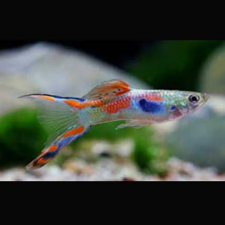

Derniers paramètres
À faire
Où en est le bac
Le bac aujourd'hui
Dernières notes
Relevé des paramètres
Évolution
Historique
Le vivant
Ajouter une espèce
Budget
Enregistrer une dépense
Pour un réachat — nourriture, ouate, réactifs — utilisez le bouton « Racheter » de l'article dans la liste de courses : il remplit ce formulaire tout seul.
Ce que le guide prévoit par an
Coller une fiche produit
Sur la page du produit, sélectionnez le titre et le prix, copiez, puis collez ici.
Le lien seul fonctionne aussi.
Ajouter un article
Entretien
Ajouter une tâche
Les rations
Le guide
Températures d'été
Aucune section ne contient ce mot.
1Budget global & liste de courses
| Catégorie | Éléments inclus | Prix estimé |
|---|---|---|
| Aquarium + meuble | Cuve Juwel Rio 180 + meuble support + filtre Bioflow M + chauffage AquaHeat + LED MultiLux | 500 – 650 € |
| Sol & décors | Sable clair (25 kg) + 1 racine naturelle + lave et ardoises non calcaires (1 lave M, 1 grotte, 3 ardoises) + 1 décor résine (phare Flamingo, déjà acquis) | 85 – 110 € |
| Technique & tests | Mallette de tests en gouttes (JBL ProAquaTest Combi Set Plus NH4) + programmateur + conditionneur complet + thermomètre indépendant + niveau à bulle | 125 – 155 € |
| Plantes & engrais | 4 Vallisneria, 6 Cryptocoryne, 3 portions de mousse de Java, 2 Anubias nana, 1 fougère de Java, 5 flottantes, catappa + engrais + sous-couche nutritive | 105 – 130 € |
| Outils d'entretien | Siphon de nettoyage du sol (voir section 14) + aimant à vitre + épuisette + 2 seaux dédiés + fil de coton ou colle gel + poster de fond noir + masses filtrantes d'avance (ouate bioPad M, mousse Nitrax M, mousse bioPlus M — voir section 17) | 95 – 120 € |
| Alimentation | JBL NovoGranoMix Mini + JBL NovoTab + Hikari Algae Wafers + artémias surgelées | 20 – 30 € |
| Le vivant (faune) | 15 néons bleus + 15 Endler mâles + 8 Corydoras panda + 6 Otocinclus + 1 Ancistrus + 24 Neocaridina Blue Saphir + 8 Amano + 3 à 5 Neritina. | 250 – 310 € |
| INVESTISSEMENT TOTAL — budget prévisionnel tout équipé pour le lancement | 1 180 – 1 505 € | |
2Liste de courses à cocher
CUVE ET DÉCOR
Cuve Rio 180 LED + meuble SBX
Sable clair 25 kg — Schicker Mineral 0,4-0,8 mm, sac de 25 kg
Racine araignée étalée, 55 à 60 cm d'envergure — déjà acquise, bouillie et en trempage
Pierres de lave — 1 Premium Lava Black M acquise ; une seconde de 8 à 12 cm densifierait la masse
Ardoises : 2 pierres plates à moussifier + 1 de calage sous la racine
Poster de fond noir 100 × 50 cm + scotch double face ou vaporisateur
Scotch repositionnable + double décimètre (repères de montage)
Vinaigre blanc (test des pierres et du sable)
Phare résine — déjà acquis
TECHNIQUE ET MESURE
Mallette de tests en gouttes (JBL Combi Set Plus NH4)
Conditionneur complet (Seachem Prime, JBL Biotopol)
Programmateur de prise
Thermomètre indépendant
Multiprise à interrupteur
Détecteur de fuite (facultatif)
Niveau à bulle
PLANTES ET FIXATION
4 Vallisneria spiralis
6 Cryptocoryne wendtii
3 portions de mousse de Java (généreuses)
2 Anubias barteri nana
1 à 2 fougères de Java
5 plantes flottantes (Limnobium)
Feuilles de catappa séchées
Sous-couche nutritive JBL AquaBasis Plus 5 L
Engrais racinaire en comprimés (Tetra Crypto) — en réserve, pas au démarrage
Pince à planter courbée 30 cm (JBL Proscape P30)
Engrais liquide sans cuivre
Fil de coton ou colle gel aquarium
ENTRETIEN
Siphon JBL ProClean Aqua Ex 45-70
Aimant à vitre
Épuisette
2 seaux de 15 L dédiés
Tuyau d'air (acclimatation goutte-à-goutte)
Ouate bioPad M de rechange (réf. 88049)
Mousse Nitrax M de rechange (réf. 88055)
Mousse bioPlus M à gros pores, de rechange (réf. 88050)
Ciseaux courbés 25 cm réservés à la taille des plantes
Tuyau souple 12 mm (nettoyage du filtre)
NOURRITURE
Micro-granulés (JBL NovoGranoMix Mini)
Pastilles de fond (JBL NovoTab)
Pastilles d'algues (Hikari Algae Wafers)
Artémias congelées
LE VIVANT — DANS CET ORDRE
S4 · 24 Neocaridina Blue Saphir (2 lots de 12)
S4 · 8 Amano (même envoi)
S6 · 1 Ancistrus brun
S6 · 3 à 5 Neritina
S8 · 8 Corydoras panda
S10 · 15 néons bleus
S12 · 15 Endler mâles uniquement
S14 · 6 Otocinclus (bac mûr obligatoire)
Le peuplement s'arrête en semaine 14.
Quelle mallette de tests — et pourquoi pas des bandelettes
- Des tests en gouttes, jamais des bandelettes. Elles sont imprécises sur le KH et à peu près inutilisables sur les nitrites — précisément les deux paramètres qui commandent tout dans ce bac.
- Cinq mesures suffisent : NO2, NO3, pH, GH, KH. La JBL ProAquaTest Combi Set Plus NH4 les couvre et ajoute l'ammonium (70 à 85 €). C'est la version à préférer : le test fer de la variante « Plus Fe » ne sert que dans un bac à plantes exigeantes et CO2, alors que le NH4 sert au rodage à l'ammoniaque et au diagnostic d'une mortalité brutale.
- Équivalents acceptables : la Combi Set Plus Fe, la plus répandue en animalerie, et la Sera Aqua-Test Box — recharges un peu moins chères, lecture des teintes moins facile.
- Les réactifs se périment en deux à trois ans : notez la date d'ouverture au marqueur sur les flacons. Les recharges s'achètent à l'unité — inutile de racheter la mallette quand le NO2 est vide.
3Le kit Rio 180 LED tel qu'il est livré
| Élément | Caractéristiques |
|---|---|
| Cuve Rio 180 LED | 101 × 41 × 50 cm — 180 L annoncés — 29,5 kg à vide. Châssis inférieur de sécurité qui permet de la poser sans support intermédiaire. Quatre coloris de cadre. |
| Galerie MultiLux LED 100 | 2 tubes LED interchangeables de 895 mm : un DAY (9 000 K) et un NATURE (6 500 K). Galerie soudée par ultrasons et étanche, ouvrable pour intervenir dans le bac. |
| Filtre interne Bioflow M | 15,5 × 10,2 × 41,1 cm. Cinq masses filtrantes livrées : ouate, mousse au charbon actif, mousse anti-nitrates, mousse à mailles larges et deux mousses à mailles fines. Détail en section 17. |
| Pompe Eccoflow 600 | 600 L/h maximum pour 7 W seulement. Logée dans le corps du filtre, débit réglable à la buse de sortie. |
| Chauffage AquaHeat Pro 200 | 200 W, 340 mm de long, plage 16 à 32 °C, verre borosilicate, certifié TÜV/GS. Il se loge à l'intérieur du boîtier du filtre : rien ne dépasse dans le bac. |
| Meuble SBX (option) | 101 × 41 × 73 cm, 28,5 kg, charge admissible 500 kg, coloris assortis à la cuve. |
Ce que cela change pour ce bac
- L'éclairage n'est pas réglable en intensité. La MultiLux LED s'allume à plein régime ou pas du tout : c'est précisément pour cela que le guide impose un programmateur sur 8 h strictes et un voile de plantes flottantes, seuls moyens de tamiser la lumière et de contenir les algues.
- Le chauffage est caché dans le filtre, donc invisible et hors de portée des poissons — mais aussi impossible à lire d'un coup d'œil. D'où le thermomètre indépendant prévu au budget.
- 600 L/h pour environ 150 L d'eau réelle, soit quatre fois le volume par heure : largement suffisant, et même un peu vif pour des crevettes. Orientez la buse vers la vitre arrière ou vers la surface plutôt que vers l'avant-plan.
- Poids en charge : environ 250 kg une fois l'eau, le sable et les pierres en place. Vérifiez la planéité du sol et la solidité du plancher avant la mise en eau — un bac rempli ne se déplace plus.
- Hauteur de travail : 73 cm de meuble plus 50 cm de cuve, soit une surface d'eau à environ 1,20 m du sol.
4Le sol et sa mise en place
Le sol retenu — le sable clair
C'est le Schicker Mineral 0,4-0,8 mm qui est retenu : sable de quartz beige clair, grains roulés et fins, calibré pour les poissons fouilleurs. Un sol sombre donnerait un contraste plus marqué avec les massifs, mais il absorbe la lumière au lieu de la renvoyer et oblige à limiter les flottantes. Sur un bac planté éclairé par la seule rampe d'origine, le sable clair est le choix qui laisse le plus de marge.
- Un sac de 25 kg. Il en faut environ 17 à 18 pour la pente de 2 cm devant à 4,5-5 cm au fond, la sous-couche nutritive prenant à l'arrière 1,5 à 2 cm de l'épaisseur. Gardez les 5 kg restants fermés dans le sac plutôt que de tout verser : c'est cette réserve qui vous permettra de reformer la clairière dans six mois, quand les Corydoras l'auront effacée. La pente arrière finira alors à 4 cm plutôt qu'à 4,5 — sans conséquence.
- Un seul sable, un seul coloris. La sous-couche nutritive se cache dessous, dans la bande arrière (voir plus bas), mais en surface il n'y a qu'un sable. Deux granulométries différentes brassées par les Corydoras finissent toujours par se séparer, le fin migrant vers le bas, et l'ensemble vire au gris sale en quelques mois.
- La clairière ne se fait pas avec un second sable. Elle se lit par le creux d'un centimètre, par l'ombre des massifs qui la bordent et par la lumière qu'elle capte. Sur sol clair l'effet est plus subtil que sur sol sombre : comptez quelques semaines de pousse pour qu'il s'affirme.
- Testez le sac au vinaigre à la livraison. Ce sable n'est pas vendu pour l'aquariophilie et sa composition n'est pas garantie sans carbonates. Si ça mousse, il ne va pas dans le bac : avec un KH de 3, un sol calcaire ferait dériver les paramètres vers le haut.
Ce que cela coûte : 32,99 € le sac de 25 kg. Un second serait inutile — le sac couvre le bac avec la réserve, et l'excédent ne servirait qu'à épaissir un sol qui ne doit pas dépasser 5 cm.
Les deux tests à faire avant d'acheter
- Le vinaigre. Quelques gouttes sur une poignée de sable humide : si ça mousse, il contient du calcaire et fera grimper GH et pH. Même test que pour les pierres, même verdict — on repose.
- Le grain entre les doigts. Roulez une pincée dans la paume. Ça doit glisser, jamais accrocher ni piquer. Un sable qui râpe la peau râpera les barbillons.
Quantité, rinçage et mise en place
- 17 à 18 kg de sable pour la pente de 2 cm devant à 4,5-5 cm au fond sur 101 × 41 cm, soit environ 12 litres : la sous-couche nutritive occupe 1,5 à 2 cm de la hauteur arrière, autant de sable en moins. Le sac de 25 kg couvre largement, le reste part en réserve. N'allez pas au-delà de 5 cm de hauteur totale : un sol trop épais crée des zones sans oxygène. Et ne descendez pas sous 2 cm à l'avant — les Cryptocoryne n'y tiendraient pas et les Corydoras racleraient la vitre.
- La pente : 2 cm devant, 4,5 à 5 cm au fond (sous-couche comprise), sur les 41 cm de profondeur. C'est peu — quasi imperceptible de face — mais cela suffit à donner de la profondeur au décor et à rassembler les déchets vers l'avant, là où vous siphonnez.
- Versez le sable humide, juste rincé et non essoré, à la tasse ou au verre en descendant le récipient jusqu'au fond du bac. Sec, il vole et se dépose partout ; humide, il tient la forme qu'on lui donne. Répartissez grossièrement à la main, formez la pente en poussant de l'avant vers l'arrière avec une vieille carte plastique ou une règle tenue à plat, puis tassez légèrement du plat de la main.
- Rectifiez sous l'eau. Après la mise en eau à mi-hauteur, la pente se juge enfin de face : c'est le moment de la reprendre à la main, pas avant.
- Elle s'aplanira. Les Corydoras creusent, le siphon décape, la gravité fait le reste : on la reforme d'un revers de main pendant un changement d'eau, une fois par mois environ. La seule pente qui tient vraiment est celle qu'on cale à l'arrière avec les pierres et la base de la racine — ce que prévoit déjà votre disposition.
- Rincez par petites quantités, 2 à 3 kg à la fois dans un seau, en brassant à la main jusqu'à ce que l'eau reste claire. Comptez une vingtaine de minutes pour les 17 à 18 kg. Ce temps-là n'est pas perdu : c'est lui qui vous évite trois jours d'eau laiteuse.
- Ordre de montage : pierres, grotte, ardoises et phare posés sur la vitre nue, puis la sous-couche nutritive étalée autour d'eux dans la bande arrière, puis le sable par-dessus. Jamais l'inverse — un décor posé sur le sable, et pire encore sur la sous-couche, finit par basculer quand les Corydoras creusent dessous.
- La sous-couche nutritive ne va que derrière Y 20, jamais dans la clairière — la méthode est détaillée juste en dessous.
La sous-couche nutritive — JBL AquaBasis Plus, sous les massifs seulement
Ce bac était prévu sans sous-couche. Les 5 litres de JBL AquaBasis Plus acquis en septembre 2026 changent la mise en place, pas la logique : on ne tapisse pas le fond du bac, on nourrit la seule bande où quelque chose s'enracine.
- Ce n'est pas un sol technique. L'AquaBasis est un mélange minéral d'argiles et de fer, sans nitrates ni phosphates : il n'acidifie pas et ne consomme pas le pouvoir tampon. C'est la seule famille de sous-couche envisageable ici — avec un KH de 3 qui tient le pH à lui seul, un sol technique acidifiant aurait fait décrocher les paramètres.
- Uniquement la bande arrière. Étalée derrière Y 20, du pied du filtre (vers X 16) jusqu'à X 96, sur 1,5 à 2 cm : environ 3 à 4 litres, le reste en réserve. Rien devant Y 20. La baie de sable, celle que les huit Corydoras vont fouiller toute la journée, reste du sable pur sur toute son épaisseur — c'est ce qui règle l'objection de fond, car poissons fouilleurs et sol nutritif ne cohabitent que si le second est hors de leur portée.
- À 5 cm des vitres avant et latérales, bord avant en biseau. Contre la vitre arrière, en revanche, elle peut aller jusqu'au verre : le poster noir et la Vallisneria la masquent. Une couche brune qui affleure une vitre se voit pendant des années.
- Recouverte de 3 cm de sable au minimum. C'est la règle qui ne souffre aucune exception. En dessous, un coup de siphon un peu franc ou une Cryptocoryne arrachée font remonter les granulés, et l'eau reste brune une semaine.
- Rien sous les décors. Souche, ardoise de calage, grotte, lave et phare restent posés sur le verre nu : leur poids traverserait la sous-couche et les ferait basculer.
- Les comprimés racinaires ne servent plus au départ. Les Tetra Crypto achetés faute de billes d'argile se gardent fermés — ils reprendront du service dans un à deux ans, quand la sous-couche commencera à s'épuiser.
- Et l'engrais liquide démarre plus tard. Rien les trois premières semaines, puis demi-dose de ProFito : la sous-couche relâche déjà de quoi nourrir, et le surplus ne profiterait qu'aux diatomées du rodage.
Ce qui reste vrai de la version sans sous-couche : quatre des plantes ne touchent jamais le sol — mousse, Anubias, fougère, flottantes — et continuent de se nourrir par les feuilles ; la sous-couche ne leur apporte rien. Elle ne se recharge pas non plus : dans un à deux ans, ce sont les comprimés au pied qui prendront le relais, sans jamais avoir à vider le bac. Et si des mélanoïdes s'installent un jour, elles brasseront le sol en profondeur : une raison de plus pour les 3 cm de recouvrement.
5Plantation & décor végétal

Vallisneria
Vallisneria spiralis
Arrière-plan4 piedsRôle. Rubans souples qui montent jusqu'à la surface et masquent le filtre Bioflow. Se multiplie seule par stolons : un vrai rideau en quelques mois.
Plantation. Dans la bande arrière, au-dessus de la sous-couche nutritive — pas de comprimé au pied au démarrage. Et surtout ne jamais enterrer le collet (la base blanche des feuilles), sinon la plante pourrit.
Photo : Damitr, CC BY-SA 4.0, via Wikimedia Commons

Cryptocoryne
Cryptocoryne wendtii
Bordure de la clairière6 piedsRôle. Touffes basses et robustes, parfaites sous l'ombre des flottantes. Leurs feuilles offrent des zones calmes aux Corydoras.
Plantation. Au bord de la clairière mais dans la zone nutritive, jamais devant Y 20. Attendez-vous à une « fonte » dans les semaines suivant la mise en place : ne touchez à rien, la plante repart de sa souche. Évitez de la déplacer ensuite — un pied arraché fait remonter la sous-couche.
Photo : Haplochromis, CC BY 2.5, via Wikimedia Commons

Mousse de Java
Taxiphyllum barbieri
Sur la racine et les pierres3 portionsRôle. Pièce maîtresse du volet crevettes : le buisson dense abrite les juvéniles pendant les mues et retient le biofilm dont ils se nourrissent.
Plantation. Aucune racine — on la fixe sur le bois avec du fil de coton (qui se dégrade seul en quelques semaines) ou du fil de pêche. Taille aux ciseaux quand elle s'épaissit trop.
Photo : Wikimedia Commons, CC BY-SA 3.0

Anubias
Anubias barteri var. nana
Sur le bois / les pierres2 piedsRôle. Feuilles épaisses et vert sombre, quasi indestructibles. Elles étoffent la zone centrale du bac là où rien ne pousse au sol, et offrent aux crevettes de larges surfaces à brouter.
Plantation. Épiphyte : le rhizome se fixe au bois ou à une pierre (fil ou colle gel), jamais enterré dans le sable. Croissance très lente : elle attrape facilement les algues, d'où l'intérêt d'un éclairage limité à 8 h.
Photo : Colamc, CC BY-SA 4.0, via Wikimedia Commons

Fougère de Java
Microsorum pteropus
Sur le bois1 à 2 touffesRôle. Longues frondes gaufrées qui montent en éventail : le meilleur complément de la racine, et une cachette appréciée des Corydoras.
Plantation. Épiphyte elle aussi — rhizome fixé au bois, jamais enfoui. Elle se multiplie seule : de petites plantules apparaissent au bout des feuilles âgées, à détacher quand elles ont trois ou quatre frondes.
Photo : Tsunamicarlos, domaine public, via Wikimedia Commons

Feuilles de catappa
Terminalia catappa (badamier)
Posées au sol2 à 3 feuillesRôle. L'accessoire le plus rentable du bac pour quelques euros : les tanins libérés acidifient légèrement l'eau, ont un effet antibactérien doux, et la feuille en décomposition se couvre du biofilm dont les crevettes raffolent. Les juvéniles s'y installent en permanence.
Usage. Ce sont les feuilles séchées vendues en animalerie (jamais de feuilles fraîches cueillies). Posez-les au fond, remplacez-les tous les mois environ, quand il ne reste que les nervures. Elles ambrent légèrement l'eau : c'est normal et sans danger.
Photo : Prabhupuducherry, CC BY-SA 3.0, via Wikimedia Commons

Plantes flottantes
Limnobium laevigatum (ou Salvinia)
Surface5 pieds au départRôle. Elles restent indispensables, et les Endler y trouvent leur abri de surface : la galerie MultiLux n'est pas réglable en intensité, et elles sont le seul moyen de la tamiser. Elles pompent aussi les nitrates, ce qui prive les algues de leur carburant — décisif avec une eau du robinet déjà à 8,8 mg/L. Leurs longues racines pendantes sont un refuge de premier ordre pour les crevettes juvéniles.
Entretien. Croissance très rapide : retirez l'excédent à la main chaque semaine pour ne jamais couvrir plus de la moitié de la surface, sinon les plantes du fond s'étiolent.
Photo : Cardex, domaine public, via Wikimedia Commons
Comme pour les poissons, chaque plante du guide a des cousines vendues sous des noms voisins. Toutes ont les mêmes exigences d'éclairage et de fertilisation que celle retenue — le choix est esthétique, sauf les quelques cas signalés en rouge, qui posent un vrai problème dans ce bac.


Les trois Vallisneria du commerce, à côté de la spiralis retenue. La gigantea montre bien le problème : dans 50 cm de hauteur d'eau, ces feuilles-là se couchent et couvrent toute la surface. Photos fournies, source à préciser.


Les cinq Cryptocoryne du commerce. Sur le sable clair retenu, le brown et le tropica ressortent nettement, là où le green se confond avec la Vallisneria de l'arrière-plan. Photos fournies, source à préciser.


La différence saute aux yeux : la Java pousse en désordre et laisse passer la lumière et le courant, la Flame monte à la verticale en touffes serrées — très graphique sur une pierre ou un bout de racine, mais elle demande une taille régulière, faute de quoi sa base brunit et se décroche. La boule est soit un marimo (une algue, Aegagropila), soit de la mousse fixée sur une sphère : les deux sont sans danger et les crevettes les adorent, mais une boule ne remplace pas un buisson sur la racine. Photos fournies, source à préciser.


Les cinq Anubias du commerce. Toutes se fixent de la même façon, rhizome rampant jamais enfoui. La coffeefolia est le meilleur choix décoratif à croissance égale ; la panachée est à éviter ici — ses zones blanches attrapent les algues en premier dans un bac neuf ; la barteri classique ferait deux fois la taille de la nana sur la racine. Photos fournies, source à préciser.


Les trois fougères ont exactement les mêmes besoins que la forme classique : la Windelov se divise en crête à l'extrémité, la Narrow leaf reste fine et prend moins de place en largeur, la Trident découpe chaque fronde en doigts. Aucune n'est plus difficile qu'une autre. Photos fournies, source à préciser.


Les deux flottantes à ne pas laisser entrer. Apprenez à reconnaître la lentille d'eau avant d'acheter : quelques millimètres, deux ou trois lobes accolés, et il suffit d'une seule accrochée à un autre pot pour envahir la surface en un mois — on ne s'en débarrasse plus. La Pistia se repère à ses rosettes veloutées de 10 à 20 cm : sous une galerie fermée, elle brûle au contact des LED. Photos fournies, source à préciser.
La Salvinia se retire à la main comme le Limnobium et fait le même travail : c'est un remplacement sans conséquence. Le Phyllanthus, lui, ne prend cette couleur rouge que sous une lumière forte — exactement ce qu'un voile de flottantes est censé supprimer chez vous : sous la MultiLux tamisée, il resterait vert et banal. Photos fournies, source à préciser.
| Plante retenue | Les variantes du commerce | Ce que ça change ici |
|---|---|---|
| Vallisneria spiralis arrière-plan | V. nana (rubans fins et courts), V. asiatica ou « torta » (feuilles vrillées en tire-bouchon), V. gigantea (plus d'un mètre). | La nana convient si vous trouvez le rideau trop massif ; l'asiatica donne une texture plus graphique. La gigantea est à écarter : elle couche ses feuilles sur toute la surface d'un bac de 50 cm de haut. |
| Cryptocoryne wendtii touffes de milieu | Cultivars « green », « brown » et « tropica » ; C. beckettii petchii ; C. lutea, plus étroite. | Le cultivar brown ou tropica ressort nettement mieux sur sable clair que le green, qui se confond avec la Vallisneria. Même plante, même fonte au démarrage, même robustesse. |
| Mousse de Java refuge des crevettes | Christmas moss (ramifications en sapin, plus dense), Flame moss (pousse verticale), Riccardia / pelia (miniature). | La Christmas moss fait un buisson plus touffu, donc un meilleur refuge — mais elle pousse plus lentement et coûte deux à trois fois plus cher. La Java reste la plus tolérante, et c'est la seule qui pardonne un démarrage approximatif. |
| Anubias barteri nana sur le bois | « Petite » (miniature, très lente), « coffeefolia » (feuilles gaufrées, reflets bronze), « pinto » ou « white » (panachées de blanc), A. barteri classique (grandes feuilles). | La coffeefolia est le meilleur choix décoratif à croissance égale. Évitez les panachées : très chères, encore plus lentes, et leurs zones blanches attrapent les algues en premier — exactement ce qu'un bac neuf va produire. |
| Fougère de Java sur le bois | « Windelov » (extrémités frisées en crête), « Narrow leaf » (frondes étroites), « Trident » (découpée). | La Windelov est la plus décorative sur une racine ramifiée et reste aussi robuste que la forme classique. Aucune contre-indication : c'est un choix purement visuel. |
| Limnobium laevigatum flottantes | Salvinia (feuilles velues, plus petites), Phyllanthus fluitans (rouge), Pistia ou laitue d'eau, lentilles d'eau (Lemna). | La Salvinia fait le même travail et se retire aussi facilement. Écartez la Pistia — trop grande sous une galerie fermée, elle brûle au contact des LED — et surtout les lentilles, impossibles à éliminer une fois entrées. Le Phyllanthus rouge exige une lumière forte qu'un voile de flottantes contredit. |
Deux règles pour toutes. Rincez soigneusement toute plante neuve avant de l'introduire : c'est ainsi qu'arrivent les escargots indésirables et, plus rarement, des résidus de pesticides mortels pour les crevettes. Et préférez les plantes vendues en pot ou in vitro plutôt qu'en bouquet lesté de plomb, qui masque souvent des tiges déjà mortes.
Préparer les plantes avant de les mettre en terre
- Retirez la laine de roche ou le gel de culture. Les plantes en pot sont vendues avec un bloc de laine autour des racines, les in vitro dans un gel nutritif. L'un comme l'autre étouffent les racines s'ils restent. Démêlez délicatement sous un filet d'eau tiède, sans arracher.
- Coupez l'extrémité des racines aux ciseaux, en laissant 2 à 3 cm. Cela stimule la reprise. Pour les Cryptocoryne, ne touchez pas à la souche.
- Vaporisez les plantes restées hors de l'eau pendant que vous travaillez : une demi-heure d'attente suffit à dessécher une fougère ou une mousse.
- Séparez les touffes avant de planter. Un pot de Cryptocoryne contient souvent deux ou trois pieds distincts, un pot de Vallisneria jusqu'à cinq — de quoi couvrir plus de surface qu'il n'y paraît à l'achat.
- Rincez tout, systématiquement. C'est ainsi qu'arrivent les escargots indésirables et, plus rarement, des résidus de pesticides mortels pour les crevettes.
Plantez à niveau très bas — 2 à 3 cm d'eau au-dessus du sable seulement. Le sable reste en place, les racines s'enfoncent sans flotter, et vous placez vos six Cryptocoryne au centimètre près le long de la clairière. On remonte le niveau ensuite, doucement, sur une assiette.
Pas d'engrais liquide les trois premières semaines. Les plantes ne l'absorberaient pas encore — elles refont leurs racines —, la sous-couche nutritive alimente déjà celles qui s'enracinent, et vous ne nourririez que les algues du démarrage. Ensuite, demi-dose hebdomadaire.
Fixer les épiphytes — la règle du rhizome
- Ne jamais enterrer le rhizome. Cette tige horizontale brune, d'où partent feuilles et racines, doit rester à l'air libre, plaquée contre le support mais jamais recouverte de sable ni de mousse. C'est la seule erreur qui tue l'Anubias et la fougère.
- Fil de coton : la méthode la plus simple. Il se dégrade seul en quelques semaines, une fois les racines accrochées.
- Fil de pêche transparent : permanent et invisible une fois les plantes développées. Serrez sans étrangler le rhizome.
- Colle gel cyanoacrylate pour aquarium : la plus rapide. Une goutte sur le rhizome essuyé, puis on plaque contre le bois quelques secondes, hors de l'eau.
- Où les placer : l'Anubias en bas de la racine, dans une fourche ombragée ; la fougère plus haut, frondes libres ; la mousse enroulée sur une portion intermédiaire. Comptez deux à trois mois avant que les racines ne s'agrippent seules.
Fertilisation — la règle simple
- Par les racines : la sous-couche nutritive de la bande arrière suffit à la Vallisneria et aux Cryptocoryne. Les comprimés Tetra Crypto restent au placard jusqu'à son épuisement, dans un à deux ans — un ou deux par pied, alors, à enfoncer à la pince.
- Engrais liquide : rien les trois premières semaines, puis demi-dose hebdomadaire après le changement d'eau, pleine dose seulement si les feuilles pâlissent. C'est ce qui nourrit la mousse et les flottantes, dépourvues de racines nourricières.
- Attention crevettes : proscrivez tout engrais ou traitement contenant du cuivre, mortel pour les Neocaridina. Vérifiez systématiquement l'étiquette.

La racine — pièce maîtresse du décor
Racine araignée (spider wood), type Red Moor
55 à 60 cm d'envergurePoint focal, X 381 piècePourquoi elle est obligatoire. Ce n'est pas un élément décoratif : l'Ancistrus doit râper du bois pour son transit. C'est aussi le support de la mousse de Java, de l'Anubias et de la fougère, et une surface à biofilm majeure pour les crevettes.
La pièce retenue. Une racine araignée (spider wood) : un tronc court qui éclate en branches fines et tortueuses. C'est cette ramification qui compte ici — elle multiplie les surfaces à biofilm pour les crevettes, offre des accroches nombreuses pour l'Anubias et la fougère, et laisse passer la lumière au lieu de faire écran comme une souche pleine. Les schémas de la section 5.5 la représentent telle quelle.
La pièce acquise. Elle n'est pas dressée mais étalée : une souche courte d'où partent quatre branches fines, presque à l'horizontale, pour 55 à 60 cm d'envergure bout à bout. Cette forme-là ne se pose pas à plat sur le sable — elle se surélève, et c'est tout l'objet de la disposition revue en section 5.5.
Bois du commerce uniquement. Jamais de bois flotté ramassé : le bois de mer est chargé en sel, et un bois délité se décompose dans le bac. Le test : si la fibre s'enfonce sous l'ongle, écartez-le. Une racine neuve flotte souvent quelques jours — lestez-la ou faites-la tremper à part avant la mise en eau.
Photo : Abhik Mazumdar, CC BY 4.0, via Wikimedia Commons
Une racine étalée plutôt que dressée — ce que sa forme change
Le plan d'origine supposait une pièce dressée : une emprise au sol de 15 cm et une ramure montant à 30-35 cm au-dessus du sable. La racine acquise est l'inverse — basse et largement ouverte. Posée telle quelle, elle mangerait toute la clairière et ne surplomberait rien. Deux gestes la récupèrent, et le second fait tout.
- La surélever. Posée sur une ardoise plate enterrée sous le sable, le cœur du bois à 10 à 12 cm au-dessus du verre, elle cesse de ramper : les branches partent en éventail légèrement descendant et on récupère le dessous d'ombre que réclament les Corydoras et les Otocinclus.
- L'orienter en biais, jamais de face. C'est là que sa forme devient un avantage : la plus longue branche suit exactement la diagonale de fuite du décor, de la souche vers l'angle arrière-droit. Elle fait le travail qu'on demandait aux deux pierres plates, en mieux, parce qu'elle le fait en volume.
- Ce qui reste à surveiller. Aucune extrémité sous Y 5, sinon l'aimant et le siphon ne passent plus le long de la vitre ; et pas de pointe acérée ni de fente étroite où un Corydoras se coincerait.
L'emprise au sol, revue. Elle passe de 15 à 55-60 cm de large, mais c'est une emprise projetée : sur cette largeur, seuls la souche et les quatre pointes touchent réellement le sable. Le reste survole. La plage de fouille avant, entre X 34 et X 78 sur les 12 premiers centimètres de profondeur, reste entièrement libre.
Ce qu'on perd, et comment le rattraper. Une racine basse a moins de présence verticale qu'une ramure de 35 cm. Ce sont les épiphytes qui la rendront : une fougère de Java placée sur la branche arrière-gauche monte en trois mois à la hauteur qui manque, sans rien peser au sol.
Préparer et caler la racine
- Rincer et brosser d'abord. Les racines sont stockées en vrac dans des locaux poussiéreux : passez-la à l'eau du robinet avec une brosse souple ou une brosse à dents, et retirez tout ce qui se détache.
- Tremper une à deux semaines… ou faire bouillir une à deux heures. Le bouillage se charge en eau bien plus vite, et surtout il libère davantage de tanins dès le départ — chez vous c'est un avantage, ce sont eux qui font descendre le pH et protègent les crevettes. Prévoyez une grande marmite, ou procédez par tronçons si la racine ne rentre pas.
- Ni vis ni colle : cette pièce se cale toute seule. Une racine dressée demande une fixation parce qu'elle tient sur un seul point. La vôtre est étalée : la souche et les quatre pointes lui font cinq appuis, comme un trépied. Posez l'ardoise plate sur la vitre nue, la souche dessus, la grotte de lave en contrefort du flanc gauche, et versez le sable en enterrant l'ardoise et les pointes d'un bon tiers : le poids du sable fait le reste, sans rien qui se voie.
- Et elle ne flotte plus. C'est l'autre raison de se passer de fixation : après bouillage et trempage, elle coule sans lestage. Il n'y a donc que la bascule à empêcher, pas la poussée vers le haut — un calage mécanique y suffit.
- Si elle bouge quand même au montage à sec, ne vissez pas : glissez une seconde ardoise en coin derrière la souche, ou faites reposer une branche de plus au sol en la faisant pivoter de quelques degrés. Une colle époxy bi-composant pour aquarium reste la solution de dernier recours — elle est définitive, donc on ne l'emploie qu'une fois la position validée.
- Le lestage temporaire, si vous préférez : posez-la en place et calez-la avec des roches, ou confectionnez des boudins de gravier dans un filet. On les retire une fois le bois gorgé d'eau, au bout de deux à trois semaines.
- Ne cherchez pas à supprimer la coloration ambrée. Certaines racines relâchent des tanins pendant des mois. Le charbon actif les retire — mais votre guide le fait justement enlever après le rodage pour les conserver. C'est un choix assumé, pas un défaut.
Le bois retenu — la racine araignée

Une racine d'azalée très ramifiée : un enchevêtrement de branches fines plutôt qu'un bloc plein. C'est ce qui donne des surfaces à biofilm en quantité, des accroches nombreuses pour la mousse et les épiphytes, et des points de contact peu nombreux qui laissent la plage de fouille libre devant.
Chaque pièce est unique — et celle qui a été acquise est étalée plutôt que dressée : souche courte, quatre branches rayonnantes de 2 à 3 cm de diamètre, 55 à 60 cm bout à bout. La disposition de la section 5.5 a été revue pour elle.
Où elle en est. Bouillie, puis trempée en bassine à l'extérieur avec renouvellement de l'eau : celle-ci est redevenue limpide et le bois coule sans lestage, les tanins sont donc largement partis. Reste, avant la mise en place, un brossage à la brosse dure sous l'eau claire, sans savon — le trempage en extérieur dépose un voile verdâtre dans les creux.

Les pierres
Basalte, ardoise, roche volcanique, quartz
Lave et ardoiseAvant-gauche1 lave M + 1 grotte + 3 ardoisesRôle. Elles créent de l'ombre et des cachettes, calent la racine et servent de support à un Anubias. Une roche poreuse comme le basalte ou la lave se couvre vite de biofilm — les crevettes y passeront leurs journées.
Le test au vinaigre, systématique. Versez quelques gouttes sur la pierre : si ça mousse, c'est calcaire — elle ferait grimper le GH et le pH, incompatible avec vos paramètres. Écartez tout ce qui ressemble à du calcaire, du marbre ou du tuf, y compris les pierres vendues en animalerie sous des noms décoratifs.
Ce qui a été retenu. Une lave Premium Black taille M (15 à 20 cm) pour la structure et l'épaule de la clairière, une grotte de lave taille S en contrefort de la souche, et un lot d'ardoises : deux pierres plates à moussifier au premier plan droit, une troisième enterrée sous la racine pour la surélever. Rincez, brossez à l'eau claire sans savon, et posez tout ça sur la vitre nue avant le sable. Aucune arête coupante.
Photo : Lennart Jöhnk, CC BY-SA 4.0, via Wikimedia Commons
Les roches retenues — lave et ardoise
Une lave Premium Black taille M (15 à 20 cm) fait à elle seule l'épaule de la clairière, et la grotte de lave taille S vient en contrefort de la souche. Surface alvéolée, teinte sombre : la porosité héberge du biofilm et travaille pour les crevettes, le foncé contraste avec le sable clair sans jurer avec le bois.
Les ardoises ne cassent pas la règle d'homogénéité. Elles sont les « pierres plates » du plan, pas une roche de plus : sombres et mates comme la lave, elles disparaîtront sous la mousse de Java au premier plan, et la troisième est enterrée sous la racine, invisible. Ce que la règle interdit, c'est un assortiment visible de teintes et de grains — un galet clair au milieu des laves, par exemple.
Ce qui manque, éventuellement. Le plan prévoyait trois laves pour faire masse à gauche ; il y en a une, plus la grotte. Le phare et les quatre Cryptocoryne compensent, mais une seconde lave de 8 à 12 cm reste la façon la plus simple de densifier ce côté si, une fois le bac monté, la fuite ne se lit pas.
À écarter absolument : calcaire, marbre, tuf, et toute pierre vendue sous un nom purement décoratif — elles font grimper le GH et le pH, à l'opposé de ce que vous cherchez. D'où le test au vinaigre, systématique : quelques gouttes sur la pierre, si ça mousse, on repose. Brossez-les à l'eau claire, sans savon, et posez-les sur la vitre nue avant de verser le sable.
Vue d'ambiance — le bac une fois installé et planté

Le décor seul, en rendu photoréaliste (image générée, à titre d'ambiance) — et cette fois la disposition y est entièrement : racine étalée au point focal, longue branche filant vers l'angle arrière-droit au-dessus du sable, grotte de lave enterrée au pied de la souche, phare à l'extrémité gauche, ardoises moussues au premier plan droit, clairière de sable fin qui s'ouvre au centre et se pince derrière les ardoises. C'est le résultat que vise le plan coté ci-dessus.
Rendu indicatif après quelques mois, dans la disposition retenue : masse dense à gauche — phare, lave, grotte et quatre Cryptocoryne —, racine étalée sur son ardoise au point focal, dont la plus longue branche file vers l'angle arrière-droit, ardoises moussues à droite, et la clairière qui s'ouvre au centre avant de filer derrière elles. Les néons occupent la pleine eau, les Otocinclus les grandes feuilles, les Corydoras la clairière ; les flottantes sont groupées à gauche, au-dessus des massifs.

Ce qu'il faut en retenir. Une racine imposante posée hors du centre, une plage de sable laissée nue à l'avant, une végétation dense sur les côtés et à l'arrière : c'est exactement la structure de votre projet. Photo : Matthias Kloszczyk, CC BY-SA 2.5, via Wikimedia Commons |

Ce qu'il faut en retenir. Le rideau de plantes rubanées à l'arrière et l'ambiance tamisée sur fond sombre — le rendu qu'aura votre Vallisneria en quelques mois. Le gravier clair, en revanche, ne conviendrait pas à vos Corydoras : gardez le sable fin. Photo : Aleš Tošovský, domaine public, via Wikimedia Commons |
Le décor retenu — la clairière décentrée, fuite d'angle (vue de face)
| 1 Vallisneria — arrière-plan, aux deux extrémités | 2 Cryptocoryne — 4 pieds serrés sur le bord gauche |
| 3 Racine araignée étalée, surélevée sur ardoise, 45-55 cm | 4 Phare résine (15,5 cm), calé contre l'angle gauche |
| 5 La lave M et la grotte, en masse à gauche | 6 Ardoises moussues — elles pincent la fuite |
| 7 Clairière de sable dégagé, creusée de 1 cm | 8 La fuite : le sable file vers l'angle arrière-droit |
La même disposition vue de dessus, cotée
Ph phare · L1 la lave Premium Black M · L2 ? la seconde lave, en pointillé : facultative · G la grotte de lave, ouverture en biais vers la clairière · disques verts foncés : les 6 Cryptocoryne · disques gris cerclés : les 2 ardoises moussues · bandes vertes du fond : la Vallisneria · traits bruns : les quatre branches de la racine, en projection au sol — les petits cercles orange marquent les seuls points qui touchent vraiment le sable, tout le reste survole à 10-12 cm ; l'ovale gris pointillé sous la souche est l'ardoise de calage, enterrée. Les deux traits orange en bas sont les scotchs repères de la façade, le cercle orange le point de fuite.
Une baie de sable dégagé s'ouvre sur la façade, et son bord droit ne se referme pas : il file en biais vers l'angle arrière-droit, derrière les ardoises, et disparaît sous la Vallisneria. Le côté gauche est volontairement chargé — c'est lui qui pousse le regard vers la fuite.
Ce qu'elle règle. Une clairière simplement fermée est lisible tout de suite mais parfaitement plate : l'œil s'y arrête. En laissant le sable s'échapper vers l'angle, on récupère la profondeur d'un couloir central sans sa fragilité — et le rétrécissement masque le filtre, qui reste nu dans toute autre disposition.
Ce qu'elle demande. Un côté gauche vraiment dense : phare, lave M, grotte serrée contre la souche et 4 des 6 Cryptocoryne sur ce seul bord. Un côté gauche timide et la fuite ne se lit plus — c'est le contraste entre la masse et le vide qui fait tout le travail.
Les coordonnées. La baie s'ouvre entre X 34 et X 78 en façade. Son bord gauche remonte franchement jusqu'aux laves (X 22-42 / Y 8-24). Son bord droit part de X 78 / Y 0 et file en biais vers X 92 / Y 26, où il se pince derrière les deux ardoises (X 74-88 / Y 14-24). Racine : souche à X 38 / Y 8, surélevée de 8 à 12 cm sur son ardoise, et quatre branches presque horizontales — X 72 / Y 27 pour la plus longue, qui suit la diagonale de fuite, X 18 / Y 14 et X 26 / Y 22 vers l'arrière-gauche, X 52 / Y 5 vers l'avant. Emprise projetée 55 à 60 cm, mais cinq points de contact seulement. Grotte de lave à X 28-38 / Y 4-12, contre le flanc gauche de la souche. La baie fait ainsi 22 à 24 cm de profondeur, prolongés par la bande libre qui court devant la lave : l'ensemble couvre les 25 à 30 cm de sable dégagé qu'exigent les Corydoras, la racine ne posant au sol qu'à ses pointes.
Les règles de composition, appliquées à vos 101 cm
L'aquascaping repose sur quelques règles simples, empruntées à la composition photographique. Trois d'entre elles changent concrètement quelque chose à ce montage.
- Le point focal, à 38,5 cm du bord. Un décor lisible propose un ou deux points vers lesquels l'œil est attiré, et on les situe par le nombre d'or : longueur du bac ÷ 2,618. Ici, 101 ÷ 2,618 = 38,5 cm. C'est là que doit tomber la masse principale de la racine — jamais au centre, qui donne une composition figée et symétrique. Prenez ces 38,5 cm depuis la gauche, puisque votre clairière s'ouvre à droite.
- Un seul type de pierre — visible. On ne mélange pas plusieurs roches dans un même paysage. Ici la lave fait la masse de gauche et les ardoises la bordure droite : deux roches, mais toutes deux sombres et mates, et les ardoises finissent sous la mousse. Ce qui trahirait l'assortiment, c'est un écart de teinte ou de grain bien visible — un galet clair, du quartz —, pas deux noirs qu'on distingue à peine.
- Les trois plans, et le premier qui manque souvent. Petites plantes devant, grandes derrière : votre disposition le fait déjà. Mais entre le sable nu et les Cryptocoryne, il n'y a rien. Vos deux ardoises couvertes de mousse, posées contre le bord droit de la clairière, comblent ce vide sans occuper de volume — et donnent aux crevettes une surface de plus à brouter. La branche basse de la racine, qui plonge vers X 52 / Y 5, tient le même rôle côté gauche.
Ce qu'on ne peut pas copier des bacs de concours : les tapis de gazon au sol, les plantes rouges, les mousses hyper-denses. Tout cela suppose CO2 injecté, éclairage réglable et fertilisation quotidienne. Regardez ces bacs pour leurs proportions — moitié avant dégagée, masse végétale à l'arrière et sur les côtés — pas pour leur densité. La vôtre viendra en trois mois, quand la Vallisneria aura fait son rideau.
Monter la clairière décentrée — la procédure chiffrée
Repérage : X = distance depuis le bord gauche (0 à 101 cm), Y = distance depuis la vitre avant (0 à 41 cm). Tout se mesure au double décimètre posé sur le rebord de la cuve. Le principe à garder en tête : la clairière ne se fabrique pas avec du sable, elle se dessine avec ce qui la borde. On pose les bords d'abord, la fuite d'angle vient toute seule.
- La veille au plus tard — préparation. Racine trempée 1 à 2 semaines (ou bouillie 1 à 2 h), sable rincé jusqu'à ce que l'eau de rinçage soit claire, lave, grotte et ardoises brossées à l'eau claire sans savon, phare rincé. Vérifiez d'avoir 6 Cryptocoryne wendtii, la crispatula, 4 Vallisneria, la lave M, la grotte et les 3 ardoises, plus la colle et le fil de coton : avec moins, le côté gauche ne fait pas masse et la fuite ne se lit pas.
- Bac vide, sec, de niveau. Contrôlez le niveau du meuble à la bulle dans les deux sens avant toute chose : une cuve de 180 L ne se rattrape plus une fois pleine. Passez un chiffon humide sur les vitres intérieures.
- Marquez les trois repères sur la vitre avant, à l'extérieur. Scotch repositionnable à X = 34 et X = 78 — les deux angles de la clairière en façade — et un troisième à X = 92, sur la vitre latérale droite ou en haut du bandeau, qui marque le point de fuite. Gardez-les jusqu'à la fin.
- Le côté gauche, sur le verre nu, avant tout sable. C'est la masse qui commande tout le reste, donc elle se pose en premier. Phare à X 10 / Y 22, dos au filtre : la masse de gauche le cache. La lave Premium Black M, seule pièce de structure acquise, à X 20-35 / Y 12-24 — c'est elle qui fait l'épaule de la clairière. Si vous ajoutez une seconde lave de 8 à 12 cm, sa place est X 12-22 / Y 21-31, calée contre le phare. Serrez : pas plus de 2 à 3 cm entre les pièces.
- La grotte de lave, en contrefort de la souche. À X 28-38 / Y 4-12, base sur le verre nu — jamais plus près de la vitre avant : l'aimant et le siphon doivent passer devant, comme pour la racine —, contre le flanc gauche de l'emplacement de la racine. Orientez l'ouverture en biais vers la droite, jamais plein axe façade : on la devine du fauteuil sans qu'elle crève l'image, et l'Ancistrus qui s'y loge reste visible. Elle bloque la bascule de la racine autant qu'elle sert d'abri. Gardez-la en bordure de clairière, jamais dedans : la lave est rugueuse, le sable fin est fait pour les barbillons, pas elle.
- La racine, surélevée et posée en éventail. Pas de vis : posez la souche sur une ardoise plate, à plat sur le verre nu, la grotte de lave en contrefort à gauche. Souche à X 38 / Y 8 — le point focal des 38,5 cm —, cœur du bois 10 à 12 cm au-dessus du verre. Les branches rayonnent presque à l'horizontale : la plus longue vers X 72 / Y 27, exactement sur la diagonale de fuite, deux vers l'arrière-gauche (X 18 / Y 14 et X 26 / Y 22) qui se perdent derrière la lave et sous la Vallisneria, la dernière vers l'avant, X 52 / Y 5. Aucune extrémité sous Y 5 : il faut le passage de l'aimant et du siphon le long de la vitre. L'emprise fait 55 à 60 cm de large, mais seuls la souche et les quatre pointes touchent le sable — ce sont eux qui la stabilisent, et le reste survole la clairière, ce qui conduit le regard vers la fuite.
- Les deux ardoises ferment la fuite. À plat sur la vitre, face lisse vers le haut : la première à X 74-84 / Y 14-20, la seconde à X 82-90 / Y 18-24, légèrement en retrait. Elles pincent le passage du sable et le font disparaître derrière elles — c'est tout le mécanisme de cette disposition.
- Vérification à vide. Reculez de trois mètres, accroupissez-vous à hauteur du bac. Vous devez voir une masse pleine à gauche, un vide qui s'ouvre au centre et se rétrécit vers la droite. C'est la dernière étape où tout se déplace librement : ne versez pas le sable avant d'être satisfaite.
- La sous-couche nutritive, bande arrière seulement. Étalez le JBL AquaBasis Plus derrière Y 20, du pied du filtre (vers X 16) jusqu'à X 96, sur 1,5 à 2 cm — 3 à 4 litres suffisent —, bord avant en biseau. 5 cm de marge avec la vitre latérale droite ; à gauche, arrêtez-la au Bioflow, sans passer dessous ni recouvrir ses fentes d'aspiration ; contre la vitre arrière, allez jusqu'au verre. Rien dans la clairière, rien sous la souche, l'ardoise de calage, la grotte ni les ardoises de droite : elles restent sur le verre nu. Humidifiez-la légèrement, elle tiendra en place quand vous verserez le sable.
- Le sable, versé humide à la tasse, autour de la clairière. 4,5 à 5 cm au fond dont 3 cm au-dessus de la sous-couche, 2 cm devant. Versez d'abord tout l'arrière, puis les côtés, en poussant le sable contre les pierres pour les enterrer d'un bon tiers de leur hauteur. C'est ce qui les empêchera d'être déchaussées par les Corydoras. Recouvrez la sous-couche sans jamais la laisser affleurer — si une plaque brune apparaît, ramenez du sable dessus avant d'aller plus loin. Ne remplissez pas la clairière, et gardez environ 1 kg dans le sac : c'est votre réserve de rectification.
- Creusez la clairière de 1 cm. Retirez du sable à la main dans la baie pour qu'elle soit 1 cm sous le niveau voisin : un creux, jamais un relief. Faites filer ce creux entre les ardoises jusqu'à X 92 / Y 26, où il se perd. Un relief se serait effacé en trois semaines ; un creux se reforme d'un revers de main.
- Épiphytes et mousse — fixés à sec, avant l'eau. C'est le dernier moment où la souche et les ardoises sont hors de l'eau : vaporisez les plantes pendant tout le travail. Anubias nana et fougère de Java à la colle cyanoacrylate, un point de colle par rhizome sur le bois essuyé, maintenu 20 secondes. Placez-les sur la souche et les fourches épaisses : les extrémités fines de 2 à 3 cm ne tiennent pas un rhizome, laissez-les nues. La fougère arrive sur sa propre petite racine : calez ce morceau contre la branche arrière-gauche, ou décollez le rhizome pour le coller directement — c'est elle qui rendra la hauteur qu'une racine étalée n'a pas. Mousse de Java étalée en couche fine sur les deux ardoises et ficelée au fil de coton : c'est elle qui comblera le vide entre le sable nu et les Cryptocoryne.
- Eau à mi-hauteur, versée doucement sur une assiette posée sur le sable, pour ne pas creuser. Rectifiez la bordure de la clairière à la main sous l'eau : c'est le seul moment où vous la voyez réellement de face, et le seul où elle se corrige sans tout défaire.
- Plantation — le bord gauche d'abord. 4 Cryptocoryne wendtii serrées en arc devant la masse de gauche, à l'arrière de la clairière et hors de l'emprise de la lave comme des deux branches arrière de la racine : (X 36 / Y 24), (41 / 27), (46 / 28), (52 / 25). Toutes sont derrière Y 20, donc au-dessus de la sous-couche : ni bille ni comprimé au pied. Pince courbée, collet dégagé — la souche ne doit pas être enterrée, et n'enfoncez pas jusqu'à ramener du brun en surface.
- Les 2 Cryptocoryne wendtii restantes à droite, en retrait au fond : (X 62 / Y 28) et (X 80 / Y 30). Elles ferment visuellement la fuite sans la boucher, et laissent passer la longue branche qui vient mourir à X 72 / Y 27.
- Le rideau du fond. 2 Vallisneria contre le flanc droit du filtre, au fond (vers X 16-22 / Y 34-40, à ajuster sur l'emplacement réel du Bioflow, qui occupe l'angle arrière gauche) : elles le masqueront en quelques semaines. La Cryptocoryne crispatula juste à leur droite, vers X 26 / Y 37 : ses longues feuilles étroites montent haut, sa place est au fond, jamais dans l'arc de devant. Les 2 autres Vallisneria dans l'angle arrière droit, à X 88-96 / Y 36-40, où la fuite vient se perdre. Enfoncez le rhizome puis remontez-le légèrement : les racines dans le sable, le collet blanc au-dessus.
- Remplissage complet, toujours sur l'assiette. Conditionneur dosé pour le volume réel (150 L d'eau, pas 180), chauffage et filtre branchés, flottantes posées en dernier sur la surface, à l'écart du jet de la pompe, qui sort désormais à gauche. Retirez les scotchs.
- Le lendemain, avant tout le reste. Regardez le bac de face à trois mètres : si la fuite ne se lit pas, c'est presque toujours que le côté gauche manque de densité. Ajoutez une Cryptocoryne, remontez la lave ou ajoutez-en une seconde — c'est encore rattrapable tant que rien n'a pris racine.
Les trois erreurs qui ruinent cette disposition : des pierres posées sur le sable au lieu d'être enterrées, une racine posée à plat et de face plutôt que surélevée et dans l'axe de la fuite, et un côté gauche trop clairsemé. Aucune des trois ne se corrige facilement une fois le bac en eau.
Étoffer le décor — pierres, bois et résine
- Bois neuf : trempage d'une à deux semaines ou bouillage d'une à deux heures — voir la préparation en section 5.4. Un léger voile blanchâtre peut apparaître les premiers jours — c'est un champignon inoffensif que les crevettes et l'Ancistrus consomment.
- Le phare (résine Flamingo, 15,5 cm de haut, socle 9,2 × 5,6 cm) : non lumineux, donc sans effet sur le cycle d'éclairage. Sa cavité de base fera un abri diurne pour l'Ancistrus. Rincez-le à l'eau claire sans savon et posez-le sur la vitre nue avant de verser le sable — un décor posé sur le sable finit par basculer quand les Corydoras creusent dessous.
- Support d'épiphytes : l'Anubias et la fougère de Java se fixent sur la racine principale, aux deux extrémités, ou sur une pierre.
Les cachettes — qui a besoin de quoi
- Crevettes : la mousse de Java est leur refuge principal, complétée par les feuilles de catappa et les interstices des pierres. C'est le point le plus critique du bac, et celui qui doit être prêt en premier.
- Ancistrus : deux abris diurnes plutôt qu'un, aux extrémités opposées de la masse de gauche — la grotte de lave contre la souche et la cavité de base du phare ; le dessous de la racine surélevée complète.
- Corydoras : ils cherchent de l'ombre plutôt que des grottes. Les touffes de Cryptocoryne et le dessous de la racine suffisent.
- Néons : pas de cachettes à proprement parler, mais des zones de repli visuelles — c'est le rôle des rideaux de Vallisneria et du voile de flottantes.
- Otocinclus : les larges feuilles d'Anubias et de Cryptocoryne sont à la fois leur garde-manger et leur perchoir. Ils se posent aussi sous la racine à l'ombre. Une raison de plus de ne pas frotter tout le décor.
- Le point de vigilance : les premiers mois. La mousse sera encore chiche et les Cryptocoryne en pleine fonte au moment précis où les crevettes arrivent, en semaine 4. Deux parades gratuites : posez les feuilles de catappa dès la mise en eau, et prenez une portion de mousse généreuse à l'achat, quitte à en fixer aussi sur les pierres.
6Sécurité électrique et risque de fuite
Électricité
- La boucle d'égouttement, sur chaque câble. Le fil doit descendre plus bas que la prise avant d'y remonter : l'eau qui coulerait le long du câble tombe au sol au point bas au lieu d'entrer dans la prise. C'est la précaution la plus importante de la liste, et elle est gratuite.
- Multiprise avec interrupteur, fixée au flanc ou au dos du meuble, jamais posée à plat sur le fond.
- Vérifiez au tableau que le circuit est protégé par un différentiel 30 mA.
- Le programmateur ne pilote que la rampe LED. Ni le filtre ni le chauffage, qui doivent tourner en continu.
- Le chauffage ne se branche jamais hors de l'eau. Sur le Rio il est logé dans le boîtier du filtre : débranchez-le au début du changement d'eau, rebranchez une fois le niveau remonté.
- Avant toute intervention un peu longue les mains dans l'eau, coupez la multiprise.
Le poids et la fuite
- Le sol doit être plan. Une cale sous un angle du meuble concentre la contrainte sur un point de la vitre inférieure : c'est ainsi que les bacs cassent. Vérifiez au niveau à bulle avant de remplir, dans les deux sens.
- Sur un plancher bois, orientez le meuble perpendiculairement aux solives et, dans le doute, contre un mur porteur.
- Remplissez en deux temps : un tiers, puis vérification du niveau et de l'absence de suintement aux angles, puis le reste. Une fois plein, le bac ne se déplace plus, même de quelques centimètres.
- Un détecteur de fuite d'eau à quelques euros, posé dans le meuble, prévient d'un débordement de siphonnage.
- Contrôlez une fois par an les joints silicone intérieurs : un décollement se voit comme une ligne sombre le long de l'angle.
- Prévenez votre assureur habitation. La garantie dégâts des eaux couvre rarement d'office un aquarium de plus de 100 litres : un coup de fil règle la question.
7Le jour du montage
Avant l'arrivée du carton
- Libérez l'emplacement pour de bon. Le meuble fait 101 × 41 cm : il faut la place, mais aussi l'accès sur les côtés et par le dessus. Tout ce qui est fixé au mur au-dessus ou à côté doit être déplacé avant, pas après.
- Vérifiez la planéité au niveau à bulle, dans les deux sens, à l'endroit exact du meuble. Sur un sol ancien — tomettes, carreaux anciens, plancher — l'écart se voit rarement à l'œil. Une cale sous un seul angle concentre la contrainte sur la vitre inférieure : c'est ainsi que les bacs cassent. On rectifie l'assise du meuble entier, jamais un coin.
- La prise. Repérez-la avant de pousser le meuble : elle doit rester accessible sans déplacer le bac, et la multiprise se fixe au flanc ou au dos du meuble, jamais posée au fond.
- Le poster de fond noir se colle en premier, sur la vitre arrière, avant de plaquer le bac au mur. C'est l'oubli classique, et il est irrattrapable une fois la cuve en place. Format : 100 × 50 cm pour une vitre arrière de 101 × 50 — les posters se vendent au rouleau en hauteurs normalisées (40, 50, 60 cm) et se coupent en longueur. Prenez large, on recoupe. Deux poses possibles : le scotch double face aux quatre coins, simple mais qui laisse des bulles ; ou la pose à l'eau — vitre extérieure vaporisée, poster appliqué, air chassé à la raclette. Il tient par capillarité, se repositionne, se retire sans trace, et le rendu est bien meilleur faute de lame d'air.
L'ordre du montage — il ne se change pas
- Meuble monté et mis de niveau, cuve posée dessus à vide, à deux.
- Décors sur la vitre nue : pierres, phare, racine. On les cale, on vérifie qu'aucune arête ne touche le verre.
- Sous-couche nutritive étalée derrière Y 20 seulement, à 5 cm des vitres avant et latérales, sur 1,5 à 2 cm.
- Sable versé autour, rincé au préalable, humide, avec une pente de 2 cm devant à 4,5-5 cm au fond, dont 3 cm de sable au-dessus de la sous-couche (méthode détaillée en section 4).
- Eau à mi-hauteur, versée sur une assiette. C'est plus facile de planter dans 20 cm d'eau que dans un bac plein ou dans un bac sec où tout se dessèche.
- Plantation : Vallisneria et Cryptocoryne dans la bande nutritive, collet dégagé ; épiphytes fixés au fil de coton sur la racine ; mousse enroulée ; feuilles de catappa posées au sol dès maintenant.
- Remplissage complet, conditionneur, puis flottantes en dernier — sinon elles gênent tout le reste.
- Branchements : boucle d'égouttement sur chaque câble, chauffage à 25 °C, pompe orientée vers la vitre arrière, rampe sur le programmateur pour 8 h.
8Le rodage : faire réellement démarrer le cycle
| Méthode | Comment faire | Ce qu'il faut savoir |
|---|---|---|
| Ensemencement (le plus efficace) | Récupérer une mousse bleue usagée, une poignée d'ouate ou un peu de sable d'un bac établi et sain, et la glisser dans le filtre. | Cycle bouclé en une à deux semaines. Réservé à un bac dont vous êtes sûr : on importe aussi les escargots et les pathogènes. |
| Nourriture | Une petite pincée de granulés tous les deux jours dans le bac vide, dès la mise en eau. | Simple et gratuit, mais dosage imprécis et eau qui se trouble. Comptez les quatre semaines pleines. |
| Ammoniaque pure | Ammoniac ménager sans parfum ni tensioactif, quelques gouttes pour viser 2 mg/L, à recompléter dès que la valeur retombe. | La méthode la plus lisible, et le test NH4 est inclus dans la mallette prévue au budget. |
| Bactéries en flacon | En complément d'une des méthodes ci-dessus, jamais à la place. | Résultats très variables selon la fraîcheur du produit. Ne dispense d'aucun test. |
Reconnaître un cycle terminé
- La séquence attendue est toujours la même : l'ammoniaque monte, puis retombe pendant que les nitrites montent, puis les nitrites retombent à 0 et les nitrates apparaissent. Tant que vous n'avez pas vu le pic de nitrites, le cycle n'a pas eu lieu.
- Le test qui tranche : ajoutez une dernière fois votre source d'azote. Si 24 heures plus tard les nitrites sont à 0, le filtre encaisse — vous pouvez introduire les crevettes.
- Le bac très planté peut cycler sans pic visible : Vallisneria, Cryptocoryne et surtout les flottantes consomment l'ammonium directement. Cela ne se constate qu'en testant, jamais en supposant.
- Pendant tout le rodage : filtre en marche jour et nuit, 25 à 26 °C, éclairage sur ses 8 h, et on ne touche pas au filtre — c'est là que la colonie s'installe.
- Un changement d'eau juste avant la première introduction fait retomber les nitrates accumulés pendant le rodage.
9Fiches de la population validée

Endler — mâles uniquement
Poecilia wingei
Surface / tiers supérieur15 mâlesComportement. Petit groupe vif et coloré — vert métallique, orange, noir — qui occupe la pellicule et le tiers supérieur, là où les flottantes laissent passer la lumière. Il ne descend presque jamais au sol et ignore les crevettes adultes.
Exigence. Eau dure et alcaline : la vôtre lui convient telle quelle, sans correction. Que des mâles, sexés par l'éleveur : une seule femelle suffirait à lancer une population que rien ne régule ici. Couvercle bien fermé, c'est un poisson qui saute. Nourriture fine en surface, distribuée en deux fois.
Photo à déposer sous img/endler.jpg.

Néon bleu
Paracheirodon innesi
Milieu / intermédiaire15 individusComportement. Banc très soudé, ligne bleue électrique doublée d'un rouge limité à la moitié arrière du corps. Le banc a été ramené de 30 à 15 individus le jour où les Endler sont entrés dans le projet : il ne porte plus seul l'animation, il partage la hauteur d'eau avec un groupe de surface. Quinze reste au-dessus du seuil où un néon se sent en banc — en dessous de dix, ils se dispersent et pâlissent — et libère la charge biologique nécessaire au tiers supérieur.
Exigence. Filtration stable (filtre Juwel Bioflow M d'origine) et paramètres constants. Tolère une eau légèrement plus dure, ce qui pardonne les écarts de démarrage.
Photo : André Karwath, CC BY-SA 2.5, via Wikimedia Commons

Otocinclus
Otocinclus affinis / macrospilus
Feuilles et vitres6 individusComportement. Quatre centimètres, actif en pleine journée, collé aux feuilles de Cryptocoryne et d'Anubias qu'il nettoie sans jamais les abîmer. Il complète exactement l'Ancistrus, nocturne et cantonné aux grandes surfaces. En groupe de six, ils se suivent et broutent ensemble : c'est de l'animation permanente sur des zones aujourd'hui vides.
Exigence. C'est le poisson le plus fragile de la liste, et la seule vraie contrainte du bac : il ne s'introduit que dans un bac mûr, couvert de biofilm et d'algues — d'où la semaine 14 au calendrier, en dernier. Il jeûne mal : s'il n'y a plus rien à brouter, complétez avec une demi-pastille d'algues ou une rondelle de courgette blanchie, retirée le lendemain. Achetez-les bien ronds de ventre, jamais le ventre creux.
Photo fournie — source à préciser avant toute diffusion du document.

Corydoras panda
Corydoras panda
Fond / basse8 individusComportement. Actifs et pacifiques, ils fouillent sans cesse le sol pour consommer les restes. Trois taches noires — l'œil, la dorsale, la base de la queue — sur un corps beige clair : la silhouette la plus lisible à distance sur sable clair.
Exigence. Sable fin et non coupant obligatoire (ici le Schicker Mineral, 0,4 à 0,8 mm) pour préserver leurs barbillons. Il supporte mal au-delà de 26 à 27 °C : le climat breton lève cette réserve, mais la surveillance canicule de la section 22 vaut d'abord pour lui. Introduit en semaine 8, dans un bac déjà installé.
Photo : source à préciser
Les autres Corydoras du commerce — une seule espèce, en groupe de 8
Il ne s'agit pas de variétés de couleur mais d'espèces différentes — le genre en compte plus de 170. Elles ont toutes les mêmes besoins : sable fin non coupant, groupe d'au moins six, zone dégagée pour fouiller. On n'en mélange pas deux : chaque espèce forme son groupe, et deux groupes de quatre valent bien moins qu'un groupe de huit.


| Espèce | Aspect | Ce qu'elle vaut dans ce bac | Prix |
|---|---|---|---|
| C. sterbai | Corps sombre densément moucheté de points blancs, pectorales orange vif. | Le plus contrasté, et le seul à apporter de l'orange au sol — une couleur que rien d'autre n'occupe dans ce bac. Le mouchetage ressort bien sur sable clair. | 6 à 9 € |
| C. panda retenu ici | Beige clair, trois taches noires : l'œil, la dorsale, la base de la queue. | Le plus lisible à distance dans 100 cm de façade, silhouette reconnaissable au premier coup d'œil — et il n'ajoute pas d'orange là où les Endler en apportent déjà. | 5 à 8 € |
| C. paleatus poivré | Gris-vert marbré, le plus courant en animalerie. | Le moins cher, mais il se fond dans le sable clair et disparaît visuellement. Robuste et sans histoire. | 3 à 5 € |
| C. aeneus bronze, et sa forme albinos | Cuivré uniforme ; la version albinos est rose à yeux rouges. | Le plus robuste du lot. L'albinos pose ici le même problème que chez l'Ancistrus : il attire l'œil au sol, là où le regard devrait passer. | 3 à 6 € |
| C. habrosus nain | 2,5 cm, tacheté, en groupe de 10 à 12. | Charge biologique dérisoire, mais trop petit pour brasser efficacement 101 cm de sable — le travail de fouille se fait beaucoup moins bien. | 4 à 6 € |
Photo du sterbai : Matthew Mannell, domaine public, via Wikimedia Commons — les cinq autres : photos fournies, source à préciser.
Pourquoi le panda plutôt que le sterbai. Le sterbai apportait de l'orange au sol, une couleur alors libre. Elle ne l'est plus : les Endler en mettent déjà en surface. Reste la lisibilité pure, et le panda gagne.
Deux points valables pour toutes. Le sable fin non coupant n'est pas négociable : c'est le seul paramètre du bac qui conditionne directement leur santé, par les barbillons. Et ce sont des poissons de groupe au sens fort — à moins de six, ils cessent de fouiller et restent tapis sous les décors.

Ancistrus
Ancistrus sp.
Vitres et décors1 seul individuComportement. Grand nettoyeur de surfaces, nocturne et inoffensif pour les crevettes. Un seul sujet évite l'invasion d'alevins.
Exigence. Obligation biologique de disposer d'une racine de bois naturel à râper pour son transit.
Photo : Júlio Reis, CC BY-SA 4.0, via Wikimedia Commons
Variantes de couleur de l'Ancistrus — une seule, un seul individu


Toutes ces variétés sont le même poisson (Ancistrus sp.) : mêmes besoins, même taille adulte, même racine à râper. Le choix est purement visuel — sauf pour le voile, qui pose un vrai problème pratique.
- Classique. Le plus discret et le moins cher. Sur sable clair et fond noir, il disparaît presque : c'est un défaut si vous voulez le voir, un avantage si vous préférez que le regard aille aux bancs.
- Albinos. Très visible, mais il attire l'œil en permanence sur un poisson qui passe ses journées immobile sous la racine. Sa peau claire marque aussi davantage les blessures et les mycoses.
- Voile. À éviter ici : les longues nageoires s'accrochent et se déchirent sur le bois ramifié, et les déchirures se nécrosent facilement. Votre racine est exactement le type de décor qui les abîme.
- Super Red. Le meilleur compromis visuel dans ce bac : l'orange se marie au sable clair sans le contraste criard de l'albinos, et la couleur est stable. C'est aussi le plus cher, et il faut souvent le commander.
Quelle que soit la couleur, achetez-le jeune, entre 4 et 6 cm. Un Ancistrus atteint 12 à 15 cm et produit une quantité de déchets sans rapport avec sa taille : c'est le poisson qui charge le plus la filtration de ce bac. Et toujours un seul individu — deux mâles se disputent le territoire, un couple remplit le bac d'alevins.
Photo du classique : Júlio Reis, CC BY-SA 4.0, via Wikimedia Commons — albinos, voile et super red : photos fournies, source à préciser.

Escargot Neritina
Neritina natalensis (« zébré »)
Vitres et décors3 à 5 individusRôle. Le seul nettoyeur de vitres qui ne prolifère jamais : ses œufs n'éclosent qu'en eau saumâtre. Il vient à bout des algues vertes incrustées que l'Ancistrus laisse.
Bon à savoir. Il dépose de petits œufs blancs durs sur la racine et les décors : inesthétiques mais totalement inoffensifs. S'il tombe sur le dos, remettez-le à l'endroit — il peut ne pas s'en sortir seul.
Photo : Evan Baldonado, CC BY 4.0, via Wikimedia Commons
Les autres escargots — lesquels s'ajoutent aux Neritina
Les Neritina restent la base : ce sont les seules qui ne se reproduisent jamais en eau douce, donc les seules dont l'effectif ne vous échappe pas. Deux genres peuvent s'y ajouter sans danger — mais leur population, elle, est irréversible.


L'écart de taille se voit d'un coup d'œil : ce volume-là se retrouve en déchets dans le filtre. Photos fournies, source à préciser.
| Espèce | Aspect | Ce qu'elle vaut ici |
|---|---|---|
| Planorbe rouge Planorbella duryi | Spirale plate rouge vif, 1,5 cm. | La plus décorative sur sable clair. Broute algues et restes, ne touche pas aux plantes saines. Une explosion de planorbes est un signal utile : vous nourrissez trop. Commencez par 3 ou 4. |
| Mélanoïde Melanoides tuberculata | Coquille conique, enfouie le jour, sort la nuit. | Un vrai atout technique : elle brasse le sable en permanence et évite les poches sans oxygène en profondeur — précieux avec un sable fin. Discrète, mais on ne l'élimine plus une fois installée. |
| Ampullaire Pomacea diffusa | 5 cm, jaune ou brune. | À éviter ici. Cinq fois le volume d'une planorbe, donc autant de déchets dans le filtre, et elle grignote les plantes tendres. |
| Physe, limnée | Petites coquilles pointues translucides. | Jamais volontairement. Elles arrivent gratuitement sur les plantes neuves et prolifèrent sans rien apporter. Rincez toute plante avant de l'introduire. |
L'arbitrage en une phrase : les Neritina se comptent, les autres se subissent. Ce n'est pas un problème dans un bac bien tenu — leur nombre suit exactement la nourriture disponible — mais c'est une décision qu'on ne reprend pas.
Si le banc de néons n'est pas disponible — les deux replis
Le banc de pleine eau s'achète entier, d'un coup. Si le magasin n'a que huit néons corrects le jour où vous y allez, ne complétez pas plus tard : repartez sans rien, ou prenez l'une de ces deux espèces à la place. Toutes deux sont sûres pour les crevettes, à l'aise entre pH 7,0 et 7,5, et non sauteuses.
- Trigonostigma espei — 12 à 15 individus, 3 cm, cuivre-orangé barré de noir. Le plus calme des deux et le plus facile à trouver. Réserve : son orange concurrence celui des Endler de surface.
- Hyphessobrycon amandae (nain rouge feu) — 20 à 25 individus, 2 cm, orange braise sur fond sombre. Plus discret : il lui faut le nombre pour exister dans 100 cm de façade.
Un seul banc, quoi qu'il arrive. Ces espèces remplacent les néons, elles ne s'y ajoutent pas : deux bancs de pleine eau se dispersent mutuellement, et le plus timide finit par manger moins que l'autre sans que cela se voie — c'est ce qui a fait écarter le Microdevario kubotai, un temps envisagé.

Crevette Neocaridina « Blue Saphir »
Neocaridina davidi
Partout sur le décor24 au démarrageComportement. S'activent sur les mousses pour éliminer les micro-algues. En totale confiance dans ce bac. Commandées en deux lots de 12 chez un éleveur rennais (lebonaqua.fr), dans le même envoi que les Amano.
Exigence. Des buissons denses de mousse de Java pour abriter les juvéniles lors des mues. Et une sélection suivie : les lignées bleues dérivent plus vite que les rouges ou les jaunes, il faut retirer les juvéniles brun-bleuté à chaque génération sous peine de retour au type sauvage.
Photo : Roth 1312, CC BY 4.0, via Wikimedia Commons
Variantes de couleur — une seule à la fois


Photos : DirkBlankenhaus (CC BY-SA 3.0), Roth 1312 (CC BY 4.0), Atulbhats (CC BY-SA 4.0), via Wikimedia Commons

Crevette Amano
Caridina multidentata
RetenueSol et décors6 à 8 individusComportement. La meilleure mangeuse d'algues filamenteuses du bac, infatigable. Ses 5 cm la mettent hors de portée de tous vos poissons.
Bon à savoir. Ses larves exigent de l'eau saumâtre : aucune reproduction possible en bac d'eau douce, donc pas de surpopulation à craindre — mais pas de renouvellement non plus. Plus vorace que les Cherry : distribuez assez pour tout le monde.
Photo : Sky99, CC BY-SA 4.0, via Wikimedia Commons
10Calendrier d'introduction progressif (14 semaines)
| Période | Action & population à introduire | Objectif biologique |
|---|---|---|
| Semaines 1 à 4 | Mise en eau complète, disposition des décors et plantation. Aucun animal. | Permet d'accomplir le cycle de l'azote indispensable. |
| Fin semaine 4 | Introduction des 24 Neocaridina Blue Saphir et des 8 Amano, arrivées dans le même envoi, après vérification NO2 = 0. | Elles s'approprient les mousses sans aucun stress, dans un bac encore sans poisson. |
| Semaine 6 | Introduction de l'Ancistrus brun et des 3 à 5 Neritina. | Prise en charge du nettoyage des vitres et des décors. |
| Semaine 8 | Introduction des 8 Corydoras panda. | Le panda demande un bac installé : deux semaines de plus que le reste de l'équipe de fond. |
| Semaine 10 | Introduction des 15 néons bleus, achetés en une seule fois chez le même vendeur. | Peuplement de la zone de nage intermédiaire : un banc complété plus tard se mélange mal. |
| Semaine 12 | Introduction des 15 Endler mâles, sexés par l'éleveur — vérifiez-le à la réception. | Occupation du tiers supérieur. Aucune femelle, donc aucune reproduction. |
| Semaine 14 | Introduction des 6 Otocinclus. Dernière introduction : le peuplement est complet. | Ils arrivent en dernier parce qu'ils ont besoin d'un bac déjà couvert de biofilm et d'algues pour s'alimenter. |
11Acheter et transporter le vivant
Ce qu'on regarde en magasin
- Les bacs du magasin d'abord, les poissons ensuite. Vitres propres, aucun cadavre, pas de traitement en cours signalé sur les étiquettes, un vendeur qui vous pose des questions sur votre bac : ce sont les meilleurs indicateurs.
- Demandez depuis quand le lot est arrivé. Un poisson en magasin depuis moins d'une semaine n'a pas encore montré ce qu'il couvait.
- Sur les poissons : nageoires entières et déployées, ventre plein sans être ballonné, respiration régulière, banc groupé et actif. Écartez tout bac où un individu a des points blancs, des voiles cotonneux ou nage à l'écart.
- Sur les crevettes : elles doivent brouter en permanence. Une crevette immobile au milieu du sol, ou qui nage frénétiquement en pleine eau, va mal. Regardez aussi la couleur : c'est ce que vous verrez dans dix générations.
- Sur les Neritina : collés à la vitre ou au décor, pas retournés sur le fond. Un escargot qui se laisse détacher sans résistance est mourant.
- La commande en ligne se justifie pour les crevettes et les variétés introuvables en animalerie : livraison en 24 h, boîte isotherme, garantie d'arrivée vivante. À éviter en période de gel comme en canicule.
Le trajet et l'arrivée
- Sac gonflé d'oxygène glissé dans un sac opaque ou une glacière, trajet direct, jamais dans un coffre en plein soleil. Au-delà d'une heure et demie, demandez un suremballage isotherme.
- Prévoyez l'achat un jour où vous êtes chez vous : l'acclimatation au goutte-à-goutte dure une heure pour des poissons et jusqu'à une heure trente pour des crevettes.
- Rampe éteinte à l'arrivée, aucune nourriture le premier soir, et l'eau du sac part à l'évier — jamais dans le bac.
La quarantaine — quand elle sert vraiment
- Pour les premières introductions, le bac neuf est la quarantaine : il n'y a encore rien à contaminer. C'est à partir du moment où le bac est peuplé que l'ajout suivant devient dangereux — un seul poisson porteur suffit à déclencher une épidémie dans un banc de vingt-quatre néons.
- Le dispositif minimal : un bac nu de 20 à 30 litres, un chauffage, un exhausteur monté sur une mousse rincée dans votre bac principal, une cachette, et trois semaines d'observation.
- Si vous ne le faites pas, groupez les achats : mieux vaut prendre tout le banc d'un coup, chez le même vendeur.
- Le bac hôpital rend le même service dans l'autre sens : c'est le seul endroit où traiter un poisson malade, puisque la plupart des médicaments contiennent du cuivre et tueraient les crevettes.
12Choisir la couleur des Neocaridina
| Variété | Lisibilité dans votre bac | Tenue de la couleur | Prix et disponibilité |
|---|---|---|---|
| Red Cherry | Excellente sur sable clair, mais l'orange des Endler lui dispute désormais la partie chaude du bac. | La plus stable : lignée ancienne, rouge fidèlement transmis, et les sujets qui déraillent se repèrent immédiatement. | 2 à 3 € pièce, dans presque toutes les animaleries. |
| Yellow Fire | Très bonne : le jaune n'entre en concurrence avec rien et ressort sur le sable comme sur les plantes. | Bonne, intermédiaire. Quelques juvéniles pâles à écarter à chaque génération. | 4 à 6 € pièce, souvent à commander en ligne. |
| Blue Saphir / Blue Dream retenue ici | Superbe de près ; se perd à un mètre dans les ombres de la racine, mais le banc de néons réduit à 15 lui laisse le bleu du bac. Contraste franc sur le sable clair. | La moins stable : sélection récente, proportion notable de juvéniles brun-bleuté à retirer — c'est le prix à payer de ce choix. | 4 à 6 € pièce, rarement en magasin ; ici chez un éleveur. |
| Orange Rili / Sakura | La moins lisible dans 100 cm de façade : la partie centrale est souvent translucide. | Variable selon les lots ; le motif Rili se disperse vite si la sélection n'est pas suivie. | 3 à 5 € pièce, disponibilité irrégulière. |
Comment trancher, dans l'ordre
- 1. Contre quoi la couleur va-t-elle se détacher ? Sable clair et fond noir : le rouge et le jaune gagnent partout, le bleu disparaît dans les zones d'ombre. Ce critère se juge à trois mètres, pas le nez sur la vitre.
- 2. Cette teinte existe-t-elle déjà dans le bac ? Le bleu des néons est pris, mais par 15 poissons seulement et en pleine eau, loin du sol où vivent les crevettes ; l'orange et le rouge sont désormais occupés par les Endler en surface. C'est ce renversement qui met le Blue Saphir en tête.
- 3. Combien de sélection êtes-vous prêt à faire ? Une dizaine de retraits par an suffisent pour une lignée stable (Red Cherry, Yellow Fire), nettement plus pour les deux autres.
- 4. Le prix ne départage rien. Vingt-quatre crevettes, c'est 60 à 140 € une seule fois : la colonie se renouvelle ensuite toute seule.
13Mémos de maintenance écosystémique
Votre eau du robinet — ce qu'elle impose
- Dureté idéale. TH 14 °f, soit environ 8 °dGH : pile ce qu'il faut pour les mues des Neocaridina. Aucune correction nécessaire, ni sel minéral ni osmoseur.
- pH de départ 8,2, cible 7,0-7,5. Le TAC de 5,8 °f (environ 3 °dKH) donne un pouvoir tampon faible : dans un bac planté, la racine et les feuilles de catappa feront descendre le pH naturellement en quelques semaines. Laissez un seau reposer 24 h avant de tester.
- Jamais de produit « pH-moins ». Avec un KH aussi bas, ils provoquent des chutes brutales qui tuent les crevettes.
- Surveillez le KH, pas seulement le pH. S'il descend sous 2, le pH peut décrocher d'un jour à l'autre — les crevettes partent en premier. Un changement d'eau suffit à le remonter : il s'agit de le voir venir, pas de le corriger dans l'urgence.
- Chlore total 0,64 mg/L : le conditionneur est obligatoire à chaque changement d'eau, sans exception.
- Nitrates 8,8 mg/L au robinet : la marge sous les 15 mg/L est étroite. C'est ce qui rend les plantes flottantes et la régularité des changements d'eau vraiment déterminantes ici.
Nettoyage sécurisé du filtre Juwel Bioflow M
- Eau de rinçage : ne rincez jamais vos masses filtrantes bleues à l'eau du robinet — le chlore détruit les colonies de bactéries. Utilisez toujours l'eau siphonnée de l'aquarium.
- Fréquence : rincez la ouate blanche supérieure chaque semaine (remplacement toutes les 1 à 2 semaines). Rincez les mousses bleues fines par roulement tous les 3 à 6 mois, sans jamais les remplacer toutes en même temps.
Le changement d'eau hebdomadaire — le geste qui porte tout le reste
- Volume : 15 à 20 % du bac chaque semaine, soit 22 à 30 litres réels. Jamais davantage d'un coup : un renouvellement massif fait chuter le GH brutalement et déclenche des mues ratées chez les crevettes.
- Température : l'eau neuve doit être à ± 1 °C de celle du bac. Vérifiez au thermomètre, pas à la main.
- Conditionneur : anti-chlore obligatoire à chaque fois, ajouté au seau avant le versement.
- Méthode : siphonnez à la cloche dans la zone de sable dégagée, puis reversez doucement, de préférence sur une assiette posée au fond pour ne pas creuser le sable.
- Seaux : les deux seaux dédiés ne servent qu'à ça. Jamais de produit ménager, même rincé.
Acclimatation à l'arrivée — 1 heure qui décide de tout
- Extinction des feux. Éteignez la rampe LED avant de commencer.
- Goutte-à-goutte. Videz le sachet (animaux + eau) dans un seau propre, puis amenez l'eau du bac au goutte-à-goutte avec un tuyau d'air pincé — 1 à 2 gouttes par seconde, jusqu'à tripler le volume. Comptez 45 min pour les poissons, 1 h à 1 h 30 pour les crevettes, bien plus sensibles à l'écart de GH.
- Ne jamais verser l'eau du sachet dans l'aquarium : transférez les animaux à l'épuisette (les crevettes à la main ou au petit récipient, elles s'accrochent au filet).
- Après : pas de nourriture le premier soir, lumière éteinte jusqu'au lendemain.
Gestion de l'éclairage & des algues
- Branchez la rampe LED sur le programmateur pour une durée stricte de 8 heures consécutives par jour (ex. 14 h – 22 h).
- Les coupures en milieu de journée favorisent la prolifération des algues : pas de siestes lumineuses.
Planning d'alimentation hebdomadaire
- Lundi au vendredi : micro-granulés distribués en pleine eau pour les néons, puis pastilles de fond JBL NovoTab et Hikari Algae Wafers à l'extinction des feux pour l'équipe de fond. Les Endler happent les micro-granulés dès la surface, le reste descend vers les néons : un granulé qui coule lentement sert ici les deux étages.
- Une fois par semaine : une rondelle de courgette blanchie et lestée pour les Otocinclus, retirée le lendemain matin.
- Samedi (festin) : artémias congelées, préalablement décongelées et rincées.
- Dimanche (jeûne) : pas de distribution. Nettoie le système digestif des poissons et stimule les crevettes à consommer le biofilm.
Le volume réel — 180 litres annoncés, environ 150 litres d'eau
- Le sable, la racine, les pierres et le niveau d'eau réel retirent près de 30 litres au volume commercial.
- Calculez toutes les doses sur 150 litres, pas sur 180. Sur-doser de 20 % un produit contenant des métaux est exactement ce qui tue les crevettes.
- Le changement hebdomadaire de 15 à 20 % représente donc 22 à 30 litres, soit deux seaux de 15 litres.
Absence & vacances
- Jusqu'à 8 jours : ne rien faire. Un bac mûr et planté passe une semaine sans nourriture sans le moindre problème. Laissez le programmateur tourner et faites un changement d'eau avant le départ.
- Au-delà : confiez la tâche à quelqu'un, mais préparez des doses individuelles dans un pilulier, une case par jour de distribution (un jour sur deux suffit). La suralimentation par un proche bien intentionné est la première cause de catastrophe en cas d'absence.
- Consignes à laisser : ne pas nettoyer le filtre, ne pas changer d'eau, ne pas toucher au programmateur. En cas de poisson mort, le retirer et ne rien faire d'autre.
Entretien annuel du matériel
- Pompe : une fois par an, démontez la turbine et nettoyez son logement au coton-tige. C'est la panne la plus fréquente vers deux ou trois ans, et elle est presque toujours évitable.
- Chauffage : vérifiez le joint et l'absence de fissure, contrôlez sa consigne au thermomètre indépendant. Comptez son remplacement vers cinq ans.
- Éclairage : une rampe LED perd en intensité sans s'éteindre. Si les plantes s'étiolent et que les algues brunes reviennent sans cause évidente après trois ou quatre ans, c'est souvent elle.
- Tuyaux et ventouses : contrôlez les ventouses du chauffage et des masses filtrantes, elles durcissent et lâchent.
14Le changement d'eau, pas à pas
1. Préparer l'eau neuve — avant de toucher au bac
- Remplissez les deux seaux dédiés et ajoutez le conditionneur dans le seau, dosé sur le volume du seau, pas sur celui du bac. Vos 0,64 mg/L de chlore total le rendent obligatoire à chaque fois.
- Ajustez la température au robinet, puis vérifiez au thermomètre : ± 1 °C de l'eau du bac. À la main, on se trompe de trois degrés — c'est la première cause de mue ratée chez les crevettes.
- Laissez le seau reposer le temps de siphonner : le brassage chasse les gaz dissous.
Le conditionneur — comment il agit, et lequel prendre
La molécule active est un thiosulfate de sodium : elle réduit le chlore libre en chlorure, un ion inoffensif déjà présent dans l'eau. La réaction est instantanée — quelques secondes de brassage suffisent, il n'y a aucun temps de pose à respecter.
- Le vrai sujet, c'est la chloramine. Beaucoup de réseaux ne chlorent plus au chlore simple mais à la chloramine, un complexe chlore + ammoniac bien plus stable : contrairement au chlore libre, elle ne s'évapore pas si l'on laisse le seau reposer 24 h. Le conditionneur la casse, mais libère alors l'ammoniac.
- Prenez donc un produit « complet » — type Seachem Prime ou JBL Biotopol — qui ajoute un complexant retenant cet ammoniac le temps que les bactéries du filtre le traitent. Un simple anti-chlore ne le fait pas.
- Dosage sur le volume du seau, pas sur les 150 litres du bac. C'est l'erreur classique, et elle revient à surdoser d'un facteur cinq.
- Aucun effet rémanent : chaque changement d'eau demande sa dose. Avec 0,64 mg/L de chlore total au robinet, il n'y a pas d'exception possible.
- Ne doublez pas la dose « pour être sûre ». Un léger excès est sans danger, mais ces produits complexent aussi certains métaux utiles aux plantes.
2. Couper ce qu'il faut
- Le chauffage d'abord. Il est logé dans le boîtier du filtre : si le niveau descend trop, il se retrouve à l'air et peut casser. Débranchez-le avant de siphonner, rebranchez une fois le niveau remonté.
- La pompe peut rester en marche tant que la crépine est immergée. Dans le doute, coupez la multiprise : quinze minutes sans filtration ne font rien.
- Laissez l'éclairage éteint si c'est hors de sa plage : inutile de décaler le programmateur.
Le siphon retenu — JBL ProClean Aqua Ex 45-70
L'outil fait les deux opérations à la fois. L'eau qui part dans le seau pendant que vous passez la cloche est votre changement d'eau : on ne siphonne pas d'un côté et on ne vidange pas de l'autre. On s'arrête quand les deux seaux de 15 litres sont pleins.
Pourquoi celui-ci. Amorçage automatique par pompage, cloche assez large pour un sable de 0,4 mm — c'est le critère décisif : plus la cloche est large, plus le sable retombe au lieu de partir dans le tuyau. Format 45-70 adapté à la hauteur d'eau du Rio 180.
À l'usage : n'enfoncez jamais la cloche dans le sable, effleurez la surface en la faisant glisser ; un tiers du sol par semaine suffit. Pour le nettoyage du Bioflow, deux ou trois fois par an, un tuyau souple de 12 mm fait l'affaire.
Les précautions, valables pour les deux
- Le volume vous limitera avant la surface. Avec 22 à 30 litres seulement, vous n'aurez pas le temps de faire toute la plage de sable : d'où la consigne d'un tiers du sol par semaine, en tournant sur les zones. C'est de l'arithmétique, pas de la prudence.
- Ne pas enfoncer la cloche dans le sable. Tenez-la un à deux centimètres au-dessus du sol et coupez le flux dès que le sable s'élève dans le tube. Il retombe, les déchets partent. Un bas ou une chaussette de mousse fine sur l'embout règle définitivement la question.
- Le niveau qui descend. Le chauffage est logé dans le boîtier du filtre : un siphonnage un peu long peut le laisser à l'air. C'est la raison du débranchement en étape 2, pas une précaution de principe.
- Le seau se pose au sol, plus bas que le bac — prévoyez la place devant le meuble. Et gardez la main sur la coupure : à ce débit, les 30 litres arrivent vite.
- Inspectez le seau usagé avant de le vider : des juvéniles de crevettes s'y retrouvent à chaque fois.
3. Siphonner
- Travaillez dans la plage de sable dégagée, à l'avant : c'est là que les déchets s'accumulent et là que la cloche passe sans arracher les plantes. Jamais dans la bande arrière plantée — la sous-couche nutritive est à 3 cm sous la surface et remonterait en nuage brun.
- Tenez la cloche juste au-dessus du sable, sans l'y enfoncer, et laissez-la aspirer sur place jusqu'à ce que le nuage brun cesse, puis déplacez-la. Ne ratissez pas toute la surface : un tiers du sol par semaine suffit.
- Surveillez les crevettes. Les juvéniles se font aspirer facilement : videz le seau usagé dans un récipient clair avant de le jeter, et repêchez les rescapées. Un bas de mousse fine sur l'embout règle le problème.
- Profitez-en pour retirer une feuille de catappa réduite à ses nervures et l'excédent de flottantes.
4. Remettre en eau
- Versez doucement, sur une assiette ou une soucoupe posée au fond, ou contre la vitre : un jet direct creuse le sable et déplante les Cryptocoryne.
- Rebranchez le chauffage, puis la pompe. Vérifiez que la buse n'a pas bougé et qu'aucun décor n'a été déplacé.
- Engrais liquide après le remplissage, jamais avant — sinon vous en siphonnez la moitié.
15Combien nourrir, exactement
| Quoi | Quelle quantité | Quand et pour qui |
|---|---|---|
| Micro-granulés | Une pincée fine, l'équivalent d'un demi-ongle du petit doigt, une seule fois par jour. | En journée, lumière allumée, pour les néons — distribués en pleine eau au-dessus de la zone dégagée. Tout doit être consommé en deux minutes. |
| Pastilles de fond | Une pastille entière, un jour sur deux. | À l'extinction des feux, déposée dans la zone de sable dégagée, pour les Corydoras. Les crevettes viendront la finir dans la nuit. |
| Pastilles d'algues | Une demi-pastille, un jour sur deux ; une entière, les Amano en prenant leur part. | Le soir, pour l'Ancistrus — et pour les Otocinclus dès que le bac n'a plus assez d'algues à brouter. |
| Légume blanchi | Une rondelle de courgette de 1 cm, une fois par semaine. | Pour les Otocinclus, lestée d'une fourchette ou d'une pierre. Retirez-la le lendemain matin : passé 24 h elle se décompose et charge l'eau. |
| Artémias congelées | Un demi-cube pour tout le bac. | Le samedi. Décongelez dans un peu d'eau du bac, puis rincez dans une passoire fine et jetez le jus : il est chargé en phosphates et nourrit les algues. |
| Crevettes et escargots | Rien de spécifique. | Ils vivent du biofilm, des feuilles de catappa en décomposition et des restes. Une colonie qu'on nourrit à part est une colonie qu'on surnourrit. |
Les repères qui comptent
- La sous-alimentation ne tue pas. Un poisson d'aquarium supporte sans dommage une semaine de jeûne. L'excès, lui, ne pardonne pas.
- Le ventre plutôt que la montre : après le repas, un néon doit avoir le ventre légèrement arrondi, jamais distendu.
- Les signes de suralimentation, dans l'ordre : restes visibles sur le sable après cinq minutes, film gras à la surface, explosion soudaine des petits escargots, puis les nitrates qui montent et les algues filamenteuses qui suivent.
- Pas de nourriture le soir d'une introduction, ni pendant les 24 heures qui suivent une coupure de courant, ni pendant les 48 heures d'une alerte aux nitrites.
- Le piège des Otocinclus. Ils meurent de faim silencieusement dans un bac trop propre, sans qu'on voie rien venir : le ventre se creuse en une quinzaine de jours. Regardez-les de profil une fois par semaine — un ventre plat est un signal, pas une silhouette.
16Tailler et entretenir les plantes
| Plante | Quand intervenir | Comment |
|---|---|---|
| Vallisneria | Tous les 2 à 3 mois, dès que le rideau devient opaque | Elle se propage par stolons souterrains. On ne tire jamais sur un rejet : cela arrache le réseau entier. Coupez le stolon au ras du sable et retirez le pied. Ne raccourcissez pas les feuilles en travers, elles jaunissent au point de coupe. |
| Cryptocoryne | À la fonte, puis 1 à 2 fois par an | Coupez les feuilles fondues à la base, sans toucher à la souche : elle repart. Éclaircissez ensuite les rejets périphériques. Elle déteste être déplacée : chaque déménagement relance une fonte. |
| Mousse de Java | 2 à 3 fois par an, dès 3 à 4 cm d'épaisseur | C'est la taille la plus importante du bac. Une mousse trop épaisse prive sa base de lumière : elle brunit et se décroche par plaques, emportant l'abri des juvéniles. Rabattez-la à mi-hauteur aux ciseaux ; les chutes se refixent ailleurs. |
| Anubias | Rarement, 1 fois par an au plus | Croissance très lente. Retirez les feuilles envahies d'algues en les coupant au ras du rhizome. Quand le pied dépasse une dizaine de feuilles, coupez le rhizome net en gardant au moins trois feuilles par fragment. |
| Fougère de Java | Au fil de l'eau | Détachez les plantules formées au bout des vieilles frondes quand elles ont trois ou quatre feuilles, et fixez-les au bois. Les petits points noirs sous les feuilles sont des spores, pas une maladie. |
| Flottantes | Chaque semaine | Retrait à la main, sans jamais dépasser la moitié de la surface couverte. Laissez les longues racines pendantes : c'est un refuge de premier ordre pour les crevettes juvéniles. |
Les règles qui valent pour toutes
- Jamais plus d'un tiers de la masse végétale en une seule fois. Les plantes absorbent une part importante des nitrates : une taille sévère se traduit par une poussée d'algues dans les deux semaines qui suivent.
- Taillez avant le changement d'eau, et siphonnez les débris dans la foulée.
- La sous-couche nutritive tient un à deux ans. Passé ce délai seulement, un comprimé Tetra Crypto au pied des Vallisneria et des Cryptocoryne, une à deux fois par an — on ne refait jamais le sol.
- Feuilles jaunes ou percées de petits trous sur les plantes qui poussent vite : c'est une carence, pas une maladie. Reprenez l'engrais liquide hebdomadaire — sans cuivre, toujours.
- Ciseaux et mains propres, sans savon ni crème. Et rincez toute plante neuve avant de l'introduire.
17Le filtre Juwel Bioflow M

Les cinq masses livrées d'origine, dans leur ordre de traversée. Les repères 2, 4 et 7 sont les grilles et paniers de la colonne, pas des masses filtrantes. Document JUWEL / LBDA. |

La gamme Bioflow et les références de rechange. Votre colonne est celle de droite (M, L, XL), et votre colonne de codes celle des Rio 125, 180, 240 — soit le Bioflow M. Document JUWEL. |
| Masse (de haut en bas) | Rôle | Fournie ? | Code M | Rythme |
|---|---|---|---|---|
| bioPad ouate blanche | Premier filtre mécanique : retient les grosses particules avant qu'elles ne colmatent le reste. | Oui | 88049 | Rincée chaque semaine, remplacée toutes les 1 à 2 semaines. |
| bioBoost | Additif de démarrage bactérien. | Option | 88000 | Inutile ici : le cycle de 4 semaines fait le travail. |
| bioCarb mousse au charbon | Charbon actif : adsorbe métaux lourds, impuretés organiques et résidus de médicaments. | Oui | 88059 | À retirer après le rodage — voir ci-dessous. |
| Carbax | Charbon actif en granulés, même fonction. | Option | 88058 | Non nécessaire. |
| Nitrax mousse verte | Héberge des bactéries qui consomment les nitrates. | Oui | 88055 | Remplacée tous les 3 à 6 mois. |
| Masse (suite) | Rôle | Fournie ? | Code M | Rythme |
|---|---|---|---|---|
| bioPlus coarse mousse bleue à gros pores | Cœur biologique du filtre : c'est là que vivent les bactéries qui transforment l'ammoniaque en nitrites puis en nitrates. | Oui | 88050 | Rincée à l'eau du bac tous les 3 à 6 mois, jamais remplacée en même temps que les autres. |
| Amorax / Cirax / Phorax | Anti-ammoniaque, céramique bactérienne, anti-phosphates. | Option | 88054 88056 88057 | Aucun n'est utile dans un bac planté à faible charge. |
| bioPlus fine mousses bleues à pores fins | Finition mécanique : retiennent les particules les plus fines et donnent l'eau claire. | Oui | 88051 | Rincées par roulement tous les 3 à 6 mois, une seule à la fois. |
Configuration retenue pour ce bac
De haut en bas : bioPad (ouate) → bioPlus coarse → Nitrax → bioPlus fine ×2. Un seul consommable régulier, l'ouate blanche ; le reste ne fait que se rincer. Prévoyez d'avance un jeu d'ouate (code 88049), une mousse bleue à gros pores (88050) et une Nitrax (88055) — c'est tout ce que le bac consommera.
Crevettes et filtre — les deux précautions
- Les juvéniles se font aspirer. Les fentes d'aspiration laissent passer les crevettes de quelques millimètres. Elles y survivent très bien mais n'en ressortent pas : à chaque rinçage, inspectez la ouate au-dessus d'un récipient d'eau du bac et remettez les rescapées. Une chaussette de mousse fine plaquée sur la fente règle le problème à la source.
- Jamais d'eau du robinet sur les mousses bleues. Le chlore détruit la colonie bactérienne et provoque un pic de nitrites dans les jours qui suivent — la première cause de mortalité chez les crevettes après un nettoyage.
Réglages et entretien de la pompe
- Le courant se règle à la buse de sortie : orientez-la vers la surface pour l'oxygénation, mais assez doucement pour que les néons ne soient pas bousculés. Un léger remous suffit.
- Le débit baisse progressivement quand la ouate se colmate : c'est le signal de rinçage le plus fiable, bien avant la date théorique.
- Une fois par an, démontez la turbine et nettoyez son logement au coton-tige (voir l'entretien annuel, section 13).
- La galerie doit rester fermée au-dessus du filtre. Sans poissons sauteurs, ce n'est plus une question de sécurité pour les animaux, mais cela limite l'évaporation, la poussière et les projections sur la multiprise.
18Grille de suivi des paramètres
| Date | NO2 cible 0 | NO3 < 15 | pH 7,0 – 7,5 | GH 7 – 8 | KH 3 – 5 | T° 24 – 26 °C | Chgt d'eau | Observations |
|---|---|---|---|---|---|---|---|---|
| S1 ___/___ | ||||||||
| S2 ___/___ | ||||||||
| S3 ___/___ | ||||||||
| S4 ___/___ | ||||||||
| S5 ___/___ | ||||||||
| S6 ___/___ | ||||||||
| S7 ___/___ | ||||||||
| S8 ___/___ | ||||||||
| S9 ___/___ | ||||||||
| S10 ___/___ | ||||||||
| S11 ___/___ | ||||||||
| S12 ___/___ | ||||||||
| S13 ___/___ | ||||||||
| S14 ___/___ | ||||||||
| S15 ___/___ | ||||||||
| S16 ___/___ |
Rappel — le seul paramètre qui commande une action immédiate
- Toute valeur de NO2 différente de 0 interdit une nouvelle introduction et impose la procédure de la section 19.
- Un KH qui s'effrite semaine après semaine annonce un décrochage du pH : reprenez le rythme des changements d'eau avant d'atteindre 2 °dKH.
- Les tests en gouttes se lisent à la lumière du jour, sur fond blanc : la lecture sous la LED du bac fausse les teintes.
Crédits photographiques : images issues de Wikimedia Commons, réutilisées selon leurs licences respectives (domaine public, CC BY 2.0, CC BY-SA 2.5, CC BY-SA 3.0, CC BY 4.0, CC BY-SA 4.0) — auteurs cités sous chaque fiche.
19Dépannage & erreurs à éviter
| Symptôme | Cause probable | Que faire, dans l'ordre |
|---|---|---|
| NO2 détectable après introduction | Colonie bactérienne dépassée : population ajoutée trop vite ou filtre nettoyé trop agressivement. | Arrêter toute nourriture 48 h, changer 20 % d'eau par jour jusqu'au retour à 0, ne rien introduire de nouveau pendant deux semaines. |
| Algues filamenteuses vertes | Éclairage trop long ou excès de nitrates. | Vérifier le programmateur (8 h strictes), retirer les filaments à la main en les enroulant sur une brosse à dents, augmenter les flottantes, réduire la nourriture. |
| Eau verte ou voile blanc | Bloom bactérien du démarrage (voile) ou algues en suspension (vert). | Le voile blanc des premières semaines disparaît seul : ne rien faire. Pour l'eau verte, occulter le bac 3 jours et changer 30 % d'eau. |
| Points blancs sur les poissons | Ichtyophthirius, souvent après un coup de froid ou un ajout mal acclimaté. | Monter la température à 28-29 °C progressivement. Attention : la plupart des traitements du commerce contiennent du cuivre et tueront les crevettes — vérifier l'étiquette, ou traiter en bac séparé. |
| Crevettes immobiles, mortes après une mue | GH trop bas ou variation brutale après un gros changement d'eau. | Tester le GH (viser 7-8), revenir à des changements d'eau modérés et réguliers. |
| Coupure de courant | Filtre et chauffage à l'arrêt. | Moins de 4 h : ne rien faire. Au-delà, sortir les masses filtrantes et les garder immergées dans un seau d'eau du bac. Au retour du courant, ne pas nourrir pendant 24 h. |
La liste noire — ce qu'il ne faut surtout pas ajouter
- Barbus de Sumatra, barbus cerises : mordilleurs, ils videront le bac de ses crevettes et harcèleront les poissons calmes.
- Botias (clown, macracantha) : mangeurs d'invertébrés par vocation — escargots et crevettes disparaîtront en quelques semaines. En plus, trop grands pour 180 litres.
- Cichlidés américains (scalaires, apistogramma, kribensis) : une bouche assez large pour un néon, et une agressivité territoriale en période de ponte.
- Combattant (Betta splendens) : chasseur de crevettes redoutable malgré sa réputation paisible.
- Gouramis moyens et grands : avalent les jeunes crevettes et harcèlent les bancs de petits poissons.
- Escargots Physe / Planorbe : arrivent gratuitement sur les plantes et prolifèrent sans limite. Rincez toute plante neuve avant de l'introduire.
- Crabes (arc-en-ciel, vampire, Geosesarma) : trois raisons cumulées. Presque aucun n'est réellement aquatique — ils vivent en paludarium, avec une partie émergée et un couvercle hermétique, et s'échappent d'une galerie Juwel. Ce sont des opportunistes qui attrapent les crevettes en mue, les juvéniles et un poisson qui dort. Et ils creusent, coupent les plantes et déplacent la mousse : ni la bordure de la clairière ni les épiphytes fraîchement fixés n'y survivraient. La seule alternative envisageable en eau douce est la crevette filtreuse Atyopsis moluccensis, pacifique et spectaculaire, mais elle exige un courant fort et permanent que ce bac n'offre pas.
20Les algues du démarrage
| Ce que vous voyez | Quand | Ce qu'il faut faire |
|---|---|---|
| Voile blanchâtre en suspension | Jours 3 à 15 | Bloom bactérien, classique d'un bac en rodage. Rien du tout : il se dissipe seul. Un changement d'eau le relance. |
| Dépôt brun poudreux | Semaines 3 à 8 | Diatomées. Passez l'aimant sur la vitre avant pour voir dans le bac, et laissez le reste. Les Neritina et l'Ancistrus, arrivés en semaine 6, en viennent à bout en quelques jours. C'est aussi ce dépôt qui nourrira les Otocinclus à leur arrivée : n'en éliminez pas la moindre trace avant la semaine 12. |
| Voile vert sur la vitre | Dès le 2ᵉ mois | Normal et permanent dans tout bac équilibré. Aimant chaque semaine sur les faces avant et latérales ; laissez la vitre arrière se couvrir, c'est du pâturage pour les crevettes. |
| Filaments verts | À partir du 3ᵉ mois | Le seul signal qui demande une correction : éclairage trop long ou nourriture excédentaire. Voir la section 19. |
| Voile bleu-vert glissant, à odeur marquée | Rare | Ce n'est pas une algue mais une cyanobactérie, favorisée par un coin sans courant. Retirez-la au siphon, orientez la buse vers la zone morte, réduisez la nourriture. Aucun produit : ils sont tous nocifs pour les crevettes. |
Les quatre réflexes à ne surtout pas avoir
- Multiplier les changements d'eau. L'eau du robinet réapporte des silicates et des nitrates : vous rechargez précisément ce qui nourrit les diatomées.
- Frotter tout le décor chaque jour. Le dépôt revient en 48 h tant que la cause est là, et vous détruisez le biofilm que broutent les crevettes.
- Éteindre la rampe ou raccourcir l'éclairage. Les diatomées s'en accommodent très bien, les plantes non — et ce sont les plantes qui règlent le problème en prenant le dessus.
- Acheter un anti-algues. La plupart contiennent du cuivre ou des sels métalliques, mortels pour les Neocaridina.
21Reconnaître un poisson malade
| Signe | Ce que c'est probablement | Conduite à tenir |
|---|---|---|
| Points blancs en grains de sel, poisson qui se frotte aux décors | Ichtyophthirius, après un coup de froid ou un ajout mal acclimaté. | Montez à 28-29 °C sur deux jours, maintenez dix jours. Le cycle du parasite s'accélère et il meurt faute d'hôte. C'est le seul traitement compatible avec les crevettes. |
| Nageoires effilochées, bords blanchis ou rougis | Infection bactérienne opportuniste, presque toujours secondaire à une eau chargée. | Changements d'eau de 20 % deux fois par semaine, alimentation réduite. Cela suffit dans la majorité des cas. Antibiotique en bac hôpital uniquement. |
| Voile cotonneux blanc sur la bouche ou une plaie | Mycose, sur un poisson déjà blessé ou affaibli. | Isolement en bac hôpital. Ne traitez jamais dans le bac principal. Cherchez la cause : une arête coupante sur un décor, une bagarre, un poisson en fin de vie. |
| Ventre creux, poisson qui maigrit alors qu'il mange | Parasites internes, concurrence alimentaire — ou, chez les Otocinclus, un bac trop propre qui ne leur laisse plus rien à brouter. | Observez qui mange quoi. Pour les Otocinclus, passez immédiatement à la courgette blanchie et aux pastilles d'algues. Un vermifuge ne se donne qu'en bac séparé. |
| Respiration rapide, poissons collés à la surface ou à la sortie du filtre | Manque d'oxygène, excès de nitrites, ou chaleur. Ce n'est pas une maladie. | Testez NO2 immédiatement, vérifiez la température, orientez la buse vers la surface. C'est une urgence, contrairement aux autres lignes de ce tableau. |
| Poisson isolé du banc, immobile dans un coin | Signe précoce et non spécifique : n'importe laquelle des causes ci-dessus, ou la fin de vie. | Observez 48 h sans rien faire, en surveillant les paramètres. Un néon vit trois à cinq ans : la vieillesse en emportera quelques-uns sans cause à chercher. |
22Le bac en canicule
| Température | Ce qui se passe | Ce que vous faites |
|---|---|---|
| Jusqu'à 27 °C | Rien d'anormal. Les poissons sont simplement plus actifs et plus voraces. | Rien. Surveillez au thermomètre indépendant, une fois par jour. |
| 27 à 29 °C | L'oxygène baisse. Les néons se tiennent plus haut, l'Ancistrus sort moins la nuit. | Galerie entrouverte, buse de sortie orientée vers la surface pour créer un remous franc, éclairage réduit à 5 ou 6 h. Nourriture divisée par deux. |
| 29 à 31 °C | Zone critique pour les crevettes. Poissons en surface, respiration rapide, crevettes immobiles ou au contraire agitées. | Ventilateur de bureau soufflant en rasant la surface : l'évaporation fait perdre 1 à 3 °C, c'est de loin le moyen le plus efficace. Jeûne complet. Volets fermés dans la pièce. |
| Au-delà de 31 °C | Mortalité possible en quelques heures, crevettes d'abord. | Ventilateur en continu, bouteilles d'eau congelée posées dans le meuble ou flottant fermées — jamais de glaçons dans l'eau. Changement d'eau de 10 % avec une eau à 2 °C sous celle du bac, pas plus. |
Les réflexes qui aggravent tout
- Verser de l'eau froide en quantité. Un écart brutal tue plus vite que la chaleur elle-même, surtout les crevettes. On refroidit lentement, 1 °C par heure au maximum.
- Débrancher le chauffage. Inutile : il est déjà à l'arrêt puisque l'eau dépasse sa consigne. Et vous risquez d'oublier de le rebrancher à la fin de l'épisode.
- Nourrir normalement. La digestion consomme de l'oxygène, et les restes se décomposent deux fois plus vite. Un jeûne de trois ou quatre jours ne fait aucun mal.
- Ouvrir grand la galerie sans surveillance. Un interstice suffit pour l'échange gazeux ; grande ouverte, elle laisse entrer poussière et insectes, et l'évaporation fait chuter le niveau sous la crépine.
23Les six premiers mois
| Période | Ce que vous allez voir | Ce que vous faites |
|---|---|---|
| Mois 1 | Cryptocoryne en pleine fonte, feuilles qui se liquéfient. Voile blanc dissipé. Crevettes discrètes, souvent invisibles la première semaine. | Rien sur les Crypto : la souche est vivante. Testez chaque semaine. Ne cherchez pas les crevettes, elles sont dans la mousse. |
| Mois 2 | Dépôt brun de diatomées à son maximum, puis reflux après l'arrivée des Neritina et de l'Ancistrus. Corydoras panda en semaine 8, néons en semaine 10. Premiers stolons de Vallisneria. | Aimant sur la vitre avant uniquement. Laissez la vitre arrière et les feuilles se couvrir : c'est le garde-manger des Otocinclus. Toujours pas de taille. |
| Mois 3 | Le bac « prend » : Vallisneria qui atteint la surface, Crypto qui repart de la souche, flottantes à doubler chaque semaine. Première femelle grainée possible. | Premier retrait de flottantes devenu hebdomadaire. Passage aux tests tous les quinze jours si tout est stable. |
| Mois 4 | Premiers juvéniles de crevettes visibles sur les feuilles de catappa. Mousse qui s'épaissit. Éventuels premiers filaments verts. | Vérifiez la durée d'éclairage avant toute autre chose. Première taille de mousse si elle dépasse 3 à 4 cm. |
| Mois 5 à 6 | Rideau de Vallisneria formé, colonie de crevettes qui décolle nettement, bac visuellement abouti. Le pH s'est stabilisé sous l'effet de la racine et de la catappa. | Première grande taille (section 16), premier retrait des crevettes les moins colorées, contrôle du KH. Le peuplement, lui, est complet depuis la semaine 14 : rien à ajouter. |
Ce qui doit vous alerter, et seulement cela
- Un nitrite qui remonte après une introduction : population ajoutée trop vite ou filtre malmené. Procédure section 19.
- Un KH qui s'effrite semaine après semaine : reprenez le rythme des changements d'eau avant d'atteindre 2 °dKH.
- Aucune crevette visible passé deux mois, alors qu'elles broutaient au début : cherchez un pic de nitrites ou un produit contenant du cuivre introduit sans y penser (engrais, traitement, mains crémées).
- Des plantes qui stagnent avec des algues qui progressent : c'est l'engrais qui manque, pas la lumière.
24Les crevettes : reproduction et régulation
Le cycle, en pratique
- La femelle porte 20 à 30 œufs sous l'abdomen — on dit qu'elle est grainée — et les ventile pendant trois à quatre semaines. Les petits sont autonomes immédiatement et se réfugient dans la mousse de Java, d'où son statut de pièce maîtresse.
- Comptez trois à six mois avant de voir la population décoller, puis une centaine d'individus visibles dans ce volume.
- La régulation reste faible. Seuls les néons attrapent quelques juvéniles — les Otocinclus ont une bouche bien trop petite pour cela — et la colonie montera donc un peu plus vite qu'ailleurs. Ce n'est pas un problème — la nourriture disponible plafonne d'elle-même la population — mais la sélection des sujets ternes et le don du surplus deviennent le vrai régulateur.
- Les mues ne sont pas des morts. Une exuvie est translucide, presque blanche, parfaitement rigide ; une crevette morte est rose opaque et sera dévorée en quelques heures. Laissez l'exuvie dans le bac, elle est reconsommée.
- Le GH commande tout : à 7-8 °dGH votre eau est idéale. Les mues ratées viennent presque toujours d'un changement d'eau trop massif ou trop froid.
Garder la couleur : la sélection
Même en n'introduisant qu'une seule variété, quelques individus plus ternes ou tachetés apparaîtront à chaque génération : c'est la couleur sauvage qui ressort. Si vous ne retirez jamais ces sujets-là, la colonie vire au brun translucide en quelques années. La parade est simple et gratuite : sortez les moins colorés au fur et à mesure — donnés, échangés ou repris par un magasin — et laissez se reproduire les plus francs. Une dizaine de retraits par an suffit.
Deux points à anticiper
- Le surplus. Une colonie mûre se donne facilement en bourse aquariophile, entre particuliers ou en animalerie. Ne réglez jamais une surpopulation en ajoutant un poisson prédateur : vous perdriez la colonie entière, pas l'excédent.
- Les Amano ne se renouvellent pas. Leurs larves exigent de l'eau saumâtre : le groupe que vous achetez est celui que vous garderez, et il faudra le recompléter tous les quatre ou cinq ans.
25Ce que le bac coûte à l'année
| Poste | Détail | Par an |
|---|---|---|
| Éclairage | Deux tubes MultiLux, environ 45 W au total, 8 h par jour. | 30 à 35 € |
| Pompe Eccoflow | 7 W en continu, 24 h sur 24. | 15 € |
| Chauffage | Le poste le plus variable : il ne consomme que l'écart entre la pièce et les 25 °C du bac. | 25 à 50 € |
| Ouate filtrante | Remplacée toutes les 1 à 2 semaines : environ deux boîtes de bioPad M. | 30 à 40 € |
| Autres masses | Mousse Nitrax et remplacement d'une mousse bleue par roulement. | 20 à 25 € |
| Nourriture | Les quatre références de la liste, qui durent chacune plusieurs mois. | 30 à 40 € |
| Tests et conditionneur | Recharges de réactifs et anti-chlore, à raison d'un changement d'eau par semaine. | 35 à 50 € |
| Catappa et engrais | Feuilles à remplacer tous les mois, engrais liquide hebdomadaire. La sous-couche nutritive ne se remplace pas : comprimés racinaires à partir de la deuxième année. | 20 à 30 € |
| Eau | Environ 1,5 m³ prélevé au robinet sur l'année. | 6 à 8 € |
| Total — soit environ 20 € par mois. | 215 à 300 € | |
Les remplacements à provisionner
- Tubes LED : une rampe perd son intensité bien avant de s'éteindre. Comptez leur remplacement vers trois ou quatre ans, environ 40 € pièce.
- Chauffage : il dérive avec l'âge — d'où le thermomètre indépendant. Remplacement vers cinq ans, autour de 35 €.
- Turbine de pompe : quelques euros, à changer si le débit faiblit malgré un nettoyage annuel du logement.
- Amano : ne se reproduisant pas en eau douce, le groupe est à recompléter tous les quatre à cinq ans.
- Les Neocaridina, en revanche, ne coûteront plus rien : la colonie se renouvelle seule, et le surplus se donne.
Réglages et données
Le bac tel qu'il est livré
Sécurité électrique — à vérifier une fois
Seuils de surveillance
Sauvegarde
Tout est stocké dans ce navigateur, sur cet appareil. Exportez un fichier pour transférer vos données ailleurs ou les mettre à l'abri.
Carnet du Rio 180 — fichier autonome, aucune connexion requise.